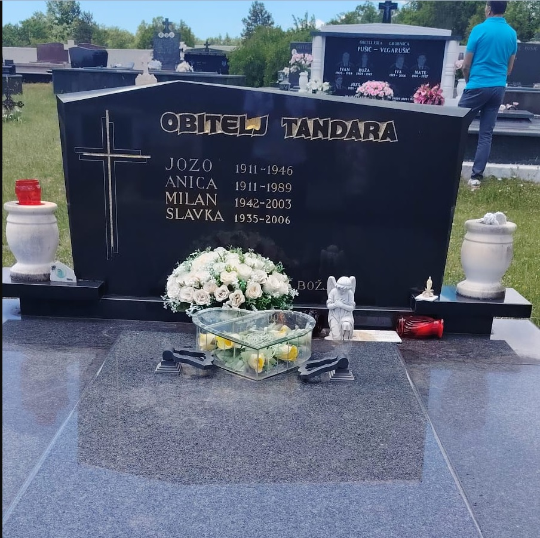

TREĆA GRANA PRVE OBITELJI TANDARA
3.0. Ante Tandara – Ivanov (rođen oko 1735.)
Ante Tandara je treći po redu sin Ivana Tandare. Ante je bio otprilike godinu dana mlađi od Petra, što se dobro uklapa u poznati redoslijed Ivanove djece. Oženio se Matijom Brnas, s kojom je imao sinove Antu, Filipa i Pavla (1777.–) te kćeri Jaku (1771.–), Lucu i Ružu. Osim zapisa o Pavlovu rođenju, nema drugih podataka o njemu, što upućuje na to da je vjerojatno umro vrlo mlad ili napustio Ričice prije nego što je ostavio trag u župnim knjigama. Antina loza ostala je čvrsto vezana uz Ričice, gdje se najjasnije razvijala tijekom 19. i 20. stoljeća. Iz ove jezgre potekao je najveći broj nositelja prezimena Tandara, pa se Antina linija smatra najrazvijenijom među Ivanovim potomcima. U kasnijim naraštajima pojedini članovi ove grane postupno su se počeli seliti – najprije u obližnja naselja, a zatim i mnogo dalje, u razne države Europske unije, kao i u Kanadu, Sjedinjene Američke Države i Australiju. Unatoč toj globalnoj raspršenosti, izvorna Antina linija ostala je čvrsto ukorijenjena u Ričicama, čuvajući kontinuitet obiteljske pripadnosti i najbogatiji pisani trag o svojim počecima.
Dopuna obiteljskog opisa: Supruga: Matija rođ. Brnas (3.0-SP-1). Djeca: sin Ante (3.1); sin Filip Antin (3.2); sin Pavle Antin (3.0-S1); kći Jaka Antina (3.0-K1); kći Luca Antina (3.0-K2); kći Ruža Antina (3.0-K3).
Šifre članova obitelji: 3.0 — Ante Tandara – Ivanov sin — nositelj zapisa 3.0-SP-1 — Matija rođ. Brnas — supruga 3.1 — Ante — sin 3.2 — Filip Antin — sin 3.0-S1 — Pavle Antin — sin 3.0-K1 — Jaka Antina — kći 3.0-K2 — Luca Antina — kći 3.0-K3 — Ruža Antina — kći.
PRVA PODGRANA ANTE ANTINA
3.1. Ante (1769.–1849.)
Ante, kao najstariji sin Ante Ivanova, oženio se 1801. godine Matijom Jukić. Imali su sinove Lovru, Miju i Petra (1821.–) te kćeri Peru (1802.–), Ružu (1804.–), Anticu (1807.–), Ivu (1808.–), drugu Anticu (1814.–) i Mariju (1823.–). Obiteljsku su lozu nastavili sinovi Lovro i Mijo. Mijini su nasljednici dobili nadimak TUCIĆI, dok su Lovrini nasljednici preko sina Marijana dobili nadimak LOVRINOVIĆI, a preko sina Križana – KRIŽANOVIĆI. Prema popisu iz 1819. godine, Ante je živio u Zavelimu, a njegov brat Filip u Ričicama. Njihovi su se potomci kasnije raselili po cijeloj Hrvatskoj, Europi, SAD-u i Kanadi. Podaci o vjerojatno živim članovima obitelji premješteni su u privatni dio arhiva.
Dopuna obiteljskog opisa: Supruga: Matija Jukić (3.1-SP-1). Djeca: sin Lovro Antin (3.1.1); sin Mijo Antin – nadimak Tucići (3.1.2); sin Petar Antin (3.1-S1); kći Pera Antina (3.1-K1); kći Ruža Antina (3.1-K2); kći Antica Antina (3.1-K3); kći Druga Antica Antina (3.1-K4); kći Iva Antina (3.1-K5); kći Marija Antina (3.1-K6).
Šifre članova obitelji: 3.1 — Ante — nositelj zapisa 3.1-SP-1 — Matija Jukić — supruga 3.1.1 — Lovro Antin — sin 3.1.2 — Mijo Antin – nadimak Tucići — sin 3.1-S1 — Petar Antin — sin 3.1-K1 — Pera Antina — kći 3.1-K2 — Ruža Antina — kći 3.1-K3 — Antica Antina — kći 3.1-K4 — Druga Antica Antina — kći 3.1-K5 — Iva Antina — kći 3.1-K6 — Marija Antina — kći.
3.1.1. Lovro Antin (1811.–1903.)
Oženio se Matijom Sičenica. Imali su sinove Marijana i Križana.
Dopuna obiteljskog opisa: Supruga: Matija Sičenica (3.1.1-SP-1). Djeca: sin Marijan Lovrin (3.1.1.1); sin Križan Lovrin (3.1.1.2).
Šifre članova obitelji: 3.1.1 — Lovro Antin — nositelj zapisa 3.1.1-SP-1 — Matija Sičenica — supruga 3.1.1.1 — Marijan Lovrin — sin 3.1.1.2 — Križan Lovrin — sin.
LOZA MARIJANA LOVRINA – LOVRINOVIĆI
3.1.1.1. Marijan Lovrin (1836.–)
Oženio se Matijom Kovač. Imali su sinove Juru (1867.–), Marka, Stipana (1873.–) i Jozu te kćeri Ivu (–1869.), Maru (1871.–1872.) i Matiju (1880.–1880.). Marijanovi potomci, preko sinova Marka i Jure, nose nadimak LOVRINOVIĆI, nastao po Marijanovu ocu Lovri. Podaci o vjerojatno živim članovima obitelji premješteni su u privatni dio arhiva.
Dopuna obiteljskog opisa: Supruga: Matija Kovač (3.1.1.1-SP-1). Djeca: sin Marko Marijanov (3.1.1.1.1); sin Jozo Marijanov – nadimak Trošići (3.1.1.1.2); sin Jure Marijanov (3.1.1.1-S1); sin Stipan Marijanov (3.1.1.1-S2); kći Iva Marijanova (3.1.1.1-K1); kći Mara Marijanova (3.1.1.1-K2); kći Matija Marijanova (3.1.1.1-K3).
Šifre članova obitelji: 3.1.1.1 — Marijan Lovrin — nositelj zapisa 3.1.1.1-SP-1 — Matija Kovač — supruga 3.1.1.1.1 — Marko Marijanov — sin 3.1.1.1.2 — Jozo Marijanov – nadimak Trošići — sin 3.1.1.1-S1 — Jure Marijanov — sin 3.1.1.1-S2 — Stipan Marijanov — sin 3.1.1.1-K1 — Iva Marijanova — kći 3.1.1.1-K2 — Mara Marijanova — kći 3.1.1.1-K3 — Matija Marijanova — kći.
3.1.1.1.1. Marko Marijanov (1869.–)
Marko je oženio Božicu Pušić. Imali su sina Mirka i kćer Ivu (1897.–).
Dopuna obiteljskog opisa: Supruga: Božica Pušić (3.1.1.1.1-SP-1). Djeca: sin Mirko Markov (3.1.1.1.1.1); kći Iva Markova (3.1.1.1.1-K1).
Šifre članova obitelji: 3.1.1.1.1 — Marko Marijanov — nositelj zapisa 3.1.1.1.1-SP-1 — Božica Pušić — supruga 3.1.1.1.1.1 — Mirko Markov — sin 3.1.1.1.1-K1 — Iva Markova — kći.
3.1.1.1.1.1. Mirko Markov (1901.–)
Mirko je oženio Anicu Kilić. Njihov sin Vladimir (1948.–1962.) umro je mlad. Podaci o vjerojatno živim članovima obitelji nalaze se u privatnom arhivu.
Dopuna obiteljskog opisa: Supruga: Anica Kilić (3.1.1.1.1.1-SP-1). Djeca: dijete Živa osoba • podaci zaštićeni (3.1.1.1.1.1.1); sin Vladimir Mirkov (3.1.1.1.1.1-S1); kći Živa osoba • podaci zaštićeni (3.1.1.1.1.1-K1); kći Živa osoba • podaci zaštićeni (3.1.1.1.1.1-K2); kći Živa osoba • podaci zaštićeni (3.1.1.1.1.1-K3).
Šifre članova obitelji: 3.1.1.1.1.1 — Mirko Markov — nositelj zapisa 3.1.1.1.1.1-SP-1 — Anica Kilić — supruga 3.1.1.1.1.1.1 — Živa osoba • podaci zaštićeni — dijete 3.1.1.1.1.1-S1 — Vladimir Mirkov — sin 3.1.1.1.1.1-K1 — Živa osoba • podaci zaštićeni — kći 3.1.1.1.1.1-K2 — Živa osoba • podaci zaštićeni — kći 3.1.1.1.1.1-K3 — Živa osoba • podaci zaštićeni — kći.
3.1.1.1.1.1.1. Živi potomak – privatni podaci
Podaci o vjerojatno živom članu dostupni su samo odobrenim korisnicima privatnog arhiva. Obitelj se preselila u Sarajevo.
Dopuna obiteljskog opisa: Supruga: Živa osoba • podaci zaštićeni (3.1.1.1.1.1.1-SP-1). Djeca: dijete Živa osoba • podaci zaštićeni (3.1.1.1.1.1.1.1); dijete Živa osoba • podaci zaštićeni (3.1.1.1.1.1.1.2).
Šifre članova obitelji: 3.1.1.1.1.1.1 — Živa osoba • podaci zaštićeni — nositelj zapisa 3.1.1.1.1.1.1-SP-1 — Živa osoba • podaci zaštićeni — supruga 3.1.1.1.1.1.1.1 — Živa osoba • podaci zaštićeni — dijete 3.1.1.1.1.1.1.2 — Živa osoba • podaci zaštićeni — dijete.
3.1.1.1.1.1.1.1. Živi potomak – privatni podaci
Podaci o vjerojatno živom članu dostupni su samo odobrenim korisnicima privatnog arhiva. Obitelj se preselila u London u Ujedinjenom Kraljevstvu.
Dopuna obiteljskog opisa: Supruga: Živa osoba • podaci zaštićeni (3.1.1.1.1.1.1.1-SP-1). Djeca: sin Živa osoba • podaci zaštićeni (3.1.1.1.1.1.1.1-S1); kći Živa osoba • podaci zaštićeni (3.1.1.1.1.1.1.1-K1).
Šifre članova obitelji: 3.1.1.1.1.1.1.1 — Živa osoba • podaci zaštićeni — nositelj zapisa 3.1.1.1.1.1.1.1-SP-1 — Živa osoba • podaci zaštićeni — supruga 3.1.1.1.1.1.1.1-S1 — Živa osoba • podaci zaštićeni — sin 3.1.1.1.1.1.1.1-K1 — Živa osoba • podaci zaštićeni — kći.
3.1.1.1.1.1.1.2. Živi potomak – privatni podaci
Podaci o vjerojatno živom članu dostupni su samo odobrenim korisnicima privatnog arhiva. Obitelj se preselila u Sarajevo.
Dopuna obiteljskog opisa: Supruga: Živa osoba • podaci zaštićeni (3.1.1.1.1.1.1.2-SP-1). Djeca: sin Živa osoba • podaci zaštićeni (3.1.1.1.1.1.1.2-S1); kći Živa osoba • podaci zaštićeni (3.1.1.1.1.1.1.2-K1).
Šifre članova obitelji: 3.1.1.1.1.1.1.2 — Živa osoba • podaci zaštićeni — nositelj zapisa 3.1.1.1.1.1.1.2-SP-1 — Živa osoba • podaci zaštićeni — supruga 3.1.1.1.1.1.1.2-S1 — Živa osoba • podaci zaštićeni — sin 3.1.1.1.1.1.1.2-K1 — Živa osoba • podaci zaštićeni — kći.
3.1.1.1.2. Jozo Marijanov (1882.–1944.) – nadimak TROŠIĆI
Jozo je oženio Ivu Kovač. Dobili su sinove Marijana i Luku.
Dopuna obiteljskog opisa: Supruga: Iva Kovač (3.1.1.1.2-SP-1). Djeca: sin Marijan Jozin (3.1.1.1.2.1); sin Luka Jozin (3.1.1.1.2.2).
Šifre članova obitelji: 3.1.1.1.2 — Jozo Marijanov – nadimak Trošići — nositelj zapisa 3.1.1.1.2-SP-1 — Iva Kovač — supruga 3.1.1.1.2.1 — Marijan Jozin — sin 3.1.1.1.2.2 — Luka Jozin — sin.
3.1.1.1.2.1. Marijan Jozin (1910.–1984.)
Marijan je oženio Anicu Budimir. Njihov sin Jozo (1942.–1948.) umro je kao dijete. Podaci o vjerojatno živim članovima obitelji nalaze se u privatnom arhivu.
Dopuna obiteljskog opisa: Supruga: Anica Budimir (3.1.1.1.2.1-SP-1). Djeca: dijete Živa osoba • podaci zaštićeni (3.1.1.1.2.1.1); sin Jozo Marijanov (3.1.1.1.2.1-S1); kći Živa osoba • podaci zaštićeni (3.1.1.1.2.1-K1); kći Živa osoba • podaci zaštićeni (3.1.1.1.2.1-K2).
Šifre članova obitelji: 3.1.1.1.2.1 — Marijan Jozin — nositelj zapisa 3.1.1.1.2.1-SP-1 — Anica Budimir — supruga 3.1.1.1.2.1.1 — Živa osoba • podaci zaštićeni — dijete 3.1.1.1.2.1-S1 — Jozo Marijanov — sin 3.1.1.1.2.1-K1 — Živa osoba • podaci zaštićeni — kći 3.1.1.1.2.1-K2 — Živa osoba • podaci zaštićeni — kći.
3.1.1.1.2.1.1. Živi potomak – privatni podaci
Podaci o vjerojatno živom članu dostupni su samo odobrenim korisnicima privatnog arhiva. Obitelj se preselila u Stobreč.
Dopuna obiteljskog opisa: Supruga: Živa osoba • podaci zaštićeni (3.1.1.1.2.1.1-SP-1). Djeca: dijete Živa osoba • podaci zaštićeni (3.1.1.1.2.1.1.1); kći Živa osoba • podaci zaštićeni (3.1.1.1.2.1.1-K1); kći Živa osoba • podaci zaštićeni (3.1.1.1.2.1.1-K2); kći Živa osoba • podaci zaštićeni (3.1.1.1.2.1.1-K3).
Šifre članova obitelji: 3.1.1.1.2.1.1 — Živa osoba • podaci zaštićeni — nositelj zapisa 3.1.1.1.2.1.1-SP-1 — Živa osoba • podaci zaštićeni — supruga 3.1.1.1.2.1.1.1 — Živa osoba • podaci zaštićeni — dijete 3.1.1.1.2.1.1-K1 — Živa osoba • podaci zaštićeni — kći 3.1.1.1.2.1.1-K2 — Živa osoba • podaci zaštićeni — kći 3.1.1.1.2.1.1-K3 — Živa osoba • podaci zaštićeni — kći.
3.1.1.1.2.1.1.1. Živi potomak – privatni podaci
Podaci o vjerojatno živom članu dostupni su samo odobrenim korisnicima privatnog arhiva. Živi u Stobreču.
Dopuna obiteljskog opisa: Supruga: Živa osoba • podaci zaštićeni (3.1.1.1.2.1.1.1-SP-1). Djeca: sin Živa osoba • podaci zaštićeni (3.1.1.1.2.1.1.1-S1); kći Živa osoba • podaci zaštićeni (3.1.1.1.2.1.1.1-K1).
Šifre članova obitelji: 3.1.1.1.2.1.1.1 — Živa osoba • podaci zaštićeni — nositelj zapisa 3.1.1.1.2.1.1.1-SP-1 — Živa osoba • podaci zaštićeni — supruga 3.1.1.1.2.1.1.1-S1 — Živa osoba • podaci zaštićeni — sin 3.1.1.1.2.1.1.1-K1 — Živa osoba • podaci zaštićeni — kći.
3.1.1.1.2.2. Luka Jozin (1912.–1987.)
Luka je oženio Anđu Kovač. Nije imao muških potomaka. Podaci o vjerojatno živim članovima obitelji nalaze se u privatnom arhivu.
Dopuna obiteljskog opisa: Supruga: Anđa Kovač (3.1.1.1.2.2-SP-1). Djeca: kći Živa osoba • podaci zaštićeni (3.1.1.1.2.2-K1); kći Živa osoba • podaci zaštićeni (3.1.1.1.2.2-K2); kći Živa osoba • podaci zaštićeni (3.1.1.1.2.2-K3).
Šifre članova obitelji: 3.1.1.1.2.2 — Luka Jozin — nositelj zapisa 3.1.1.1.2.2-SP-1 — Anđa Kovač — supruga 3.1.1.1.2.2-K1 — Živa osoba • podaci zaštićeni — kći 3.1.1.1.2.2-K2 — Živa osoba • podaci zaštićeni — kći 3.1.1.1.2.2-K3 — Živa osoba • podaci zaštićeni — kći.
LOZA KRIŽANA LOVRINA – KRIŽANOVIĆI
3.1.1.2. Križan Lovrin (1843.–1910.)
Oženio je Peru Budimir, s kojom je imao 15 djece, od toga deset sinova: Matu, Iliju (1867.–1875.), Antu, Jakova (1871.–1872.), Marijana (1873.–), Paška (–1886.), Jozu (1877.–), Ivana, Juru i Grgu (1887.–) te pet kćeri: Anicu (–1869.), Jakovicu (1868.–), drugu Anicu (1875.–1877.), Jozu (–1895.) i treću Anicu (1879.–). Sedmero Križanove djece umrlo je prije desete godine. Zanimljiv je podatak da je njegov drugi sin Ilija poginuo od uboda bika 1875. godine. Podaci o vjerojatno živim članovima obitelji premješteni su u privatni dio arhiva.
Dopuna obiteljskog opisa: Supruga: Pera Budimir (3.1.1.2-SP-1). Djeca: sin Mate Križanov (3.1.1.2.1); sin Ante Križanov (3.1.1.2.2); sin Ivan Križanov (3.1.1.2.3); sin Jure Križanov – nadimak ĐULKO (3.1.1.2.4); sin Ilija Križanov (3.1.1.2-S1); sin Jakov Križanov (3.1.1.2-S2); sin Marijan Križanov (3.1.1.2-S3); sin Paško Križanov (3.1.1.2-S4); sin Jozo Križanov (3.1.1.2-S5); sin Grgo Križanov (3.1.1.2-S6); kći Prva Anica Križanova (3.1.1.2-K1); kći Druga Anica Križanova (3.1.1.2-K2); kći Treća Anica Križanova (3.1.1.2-K3); kći Jakovica Križanova (3.1.1.2-K4); kći Joza Križanova (3.1.1.2-K5).
Šifre članova obitelji: 3.1.1.2 — Križan Lovrin — nositelj zapisa 3.1.1.2-SP-1 — Pera Budimir — supruga 3.1.1.2.1 — Mate Križanov — sin 3.1.1.2.2 — Ante Križanov — sin 3.1.1.2.3 — Ivan Križanov — sin 3.1.1.2.4 — Jure Križanov – nadimak ĐULKO — sin 3.1.1.2-S1 — Ilija Križanov — sin 3.1.1.2-S2 — Jakov Križanov — sin 3.1.1.2-S3 — Marijan Križanov — sin 3.1.1.2-S4 — Paško Križanov — sin 3.1.1.2-S5 — Jozo Križanov — sin 3.1.1.2-S6 — Grgo Križanov — sin 3.1.1.2-K1 — Prva Anica Križanova — kći 3.1.1.2-K2 — Druga Anica Križanova — kći 3.1.1.2-K3 — Treća Anica Križanova — kći 3.1.1.2-K4 — Jakovica Križanova — kći 3.1.1.2-K5 — Joza Križanova — kći.
3.1.1.2.1. Mate Križanov (1866.–1948.)
Križanov najstariji sin Mate oženio je Ivu Pirić. Imali su sinove Miju (1894.–1923.), Marijana i Jozu te kćer Matiju (1898.–1906.). Mijo se nikada nije oženio. Obitelj se preselila u Bektež kraj Kutjeva. Podaci o vjerojatno živim članovima obitelji premješteni su u privatni dio arhiva.
Dopuna obiteljskog opisa: Supruga: Iva Pirić (3.1.1.2.1-SP-1). Djeca: sin Marijan Matin (3.1.1.2.1.1); sin Jozo Matin (3.1.1.2.1.2); sin Mijo Matin (3.1.1.2.1-S1); kći Živa osoba • podaci zaštićeni (3.1.1.2.1-K1); kći Matija Matina (3.1.1.2.1-K2).
Šifre članova obitelji: 3.1.1.2.1 — Mate Križanov — nositelj zapisa 3.1.1.2.1-SP-1 — Iva Pirić — supruga 3.1.1.2.1.1 — Marijan Matin — sin 3.1.1.2.1.2 — Jozo Matin — sin 3.1.1.2.1-S1 — Mijo Matin — sin 3.1.1.2.1-K1 — Živa osoba • podaci zaštićeni — kći 3.1.1.2.1-K2 — Matija Matina — kći.
3.1.1.2.1.1. Marijan Matin (1902.–1974.)
Marijan je oženio Anicu Maras. Njihov sin Jozo (1941.–2002.) nije se ženio. Obitelj se preselila u Bektež kraj Kutjeva. Podaci o živim članovima obitelji nalaze se u privatnom arhivu.
Dopuna obiteljskog opisa: Supruga: Anica Maras (3.1.1.2.1.1-SP-1). Djeca: dijete Živa osoba • podaci zaštićeni (3.1.1.2.1.1.1); dijete Živa osoba • podaci zaštićeni (3.1.1.2.1.1.2); dijete Živa osoba • podaci zaštićeni (3.1.1.2.1.1.3); sin Jozo Marijanov (3.1.1.2.1.1-S1); kći Živa osoba • podaci zaštićeni (3.1.1.2.1.1-K1).
Šifre članova obitelji: 3.1.1.2.1.1 — Marijan Matin — nositelj zapisa 3.1.1.2.1.1-SP-1 — Anica Maras — supruga 3.1.1.2.1.1.1 — Živa osoba • podaci zaštićeni — dijete 3.1.1.2.1.1.2 — Živa osoba • podaci zaštićeni — dijete 3.1.1.2.1.1.3 — Živa osoba • podaci zaštićeni — dijete 3.1.1.2.1.1-S1 — Jozo Marijanov — sin 3.1.1.2.1.1-K1 — Živa osoba • podaci zaštićeni — kći.
3.1.1.2.1.1.1. Živi potomak – privatni podaci
Podaci o vjerojatno živom članu dostupni su samo odobrenim korisnicima privatnog arhiva. Obitelj se preselila u Strizivojnu.
Dopuna obiteljskog opisa: Supruga: Živa osoba • podaci zaštićeni (3.1.1.2.1.1.1-SP-1). Djeca: dijete Živa osoba • podaci zaštićeni (3.1.1.2.1.1.1.1); kći Živa osoba • podaci zaštićeni (3.1.1.2.1.1.1-K1).
Šifre članova obitelji: 3.1.1.2.1.1.1 — Živa osoba • podaci zaštićeni — nositelj zapisa 3.1.1.2.1.1.1-SP-1 — Živa osoba • podaci zaštićeni — supruga 3.1.1.2.1.1.1.1 — Živa osoba • podaci zaštićeni — dijete 3.1.1.2.1.1.1-K1 — Živa osoba • podaci zaštićeni — kći.
3.1.1.2.1.1.1.1. Živi potomak – privatni podaci
Podaci o vjerojatno živom članu dostupni su samo odobrenim korisnicima privatnog arhiva. Živi u Njemačkoj.
Dopuna obiteljskog opisa: Supruge: Živa osoba • podaci zaštićeni (3.1.1.2.1.1.1.1-SP-1); Živa osoba • podaci zaštićeni (3.1.1.2.1.1.1.1-SP-2). Djeca: sin Živa osoba • podaci zaštićeni (3.1.1.2.1.1.1.1-S1); sin Živa osoba • podaci zaštićeni (3.1.1.2.1.1.1.1-S2); sin Živa osoba • podaci zaštićeni (3.1.1.2.1.1.1.1-S3).
Šifre članova obitelji: 3.1.1.2.1.1.1.1 — Živa osoba • podaci zaštićeni — nositelj zapisa 3.1.1.2.1.1.1.1-SP-1 — Živa osoba • podaci zaštićeni — supruga 1 3.1.1.2.1.1.1.1-SP-2 — Živa osoba • podaci zaštićeni — supruga 2 3.1.1.2.1.1.1.1-S1 — Živa osoba • podaci zaštićeni — sin 3.1.1.2.1.1.1.1-S2 — Živa osoba • podaci zaštićeni — sin 3.1.1.2.1.1.1.1-S3 — Živa osoba • podaci zaštićeni — sin.
3.1.1.2.1.1.2. Živi potomak – privatni podaci
Podaci o vjerojatno živom članu dostupni su samo odobrenim korisnicima privatnog arhiva. Obitelj se preselila u Strizivojnu.
Dopuna obiteljskog opisa: Supruga: Živa osoba • podaci zaštićeni (3.1.1.2.1.1.2-SP-1). Djeca: dijete Živa osoba • podaci zaštićeni (3.1.1.2.1.1.2.1); kći Živa osoba • podaci zaštićeni (3.1.1.2.1.1.2-K1).
Šifre članova obitelji: 3.1.1.2.1.1.2 — Živa osoba • podaci zaštićeni — nositelj zapisa 3.1.1.2.1.1.2-SP-1 — Živa osoba • podaci zaštićeni — supruga 3.1.1.2.1.1.2.1 — Živa osoba • podaci zaštićeni — dijete 3.1.1.2.1.1.2-K1 — Živa osoba • podaci zaštićeni — kći.
3.1.1.2.1.1.2.1. Živi potomak – privatni podaci
Podaci o vjerojatno živom članu dostupni su samo odobrenim korisnicima privatnog arhiva. Živi u Strizivojni.
Dopuna obiteljskog opisa: Supruga: Živa osoba • podaci zaštićeni (3.1.1.2.1.1.2.1-SP-1). Djeca: sin Živa osoba • podaci zaštićeni (3.1.1.2.1.1.2.1-S1); kći Živa osoba • podaci zaštićeni (3.1.1.2.1.1.2.1-K1).
Šifre članova obitelji: 3.1.1.2.1.1.2.1 — Živa osoba • podaci zaštićeni — nositelj zapisa 3.1.1.2.1.1.2.1-SP-1 — Živa osoba • podaci zaštićeni — supruga 3.1.1.2.1.1.2.1-S1 — Živa osoba • podaci zaštićeni — sin 3.1.1.2.1.1.2.1-K1 — Živa osoba • podaci zaštićeni — kći.
3.1.1.2.1.1.3. Živi potomak – privatni podaci
Podaci o vjerojatno živom članu dostupni su samo odobrenim korisnicima privatnog arhiva. Živi u Đakovu.
Dopuna obiteljskog opisa: Supruga: Živa osoba • podaci zaštićeni (3.1.1.2.1.1.3-SP-1). Djeca: sin Živa osoba • podaci zaštićeni (3.1.1.2.1.1.3-S1); kći Živa osoba • podaci zaštićeni (3.1.1.2.1.1.3-K1); kći Živa osoba • podaci zaštićeni (3.1.1.2.1.1.3-K2).
Šifre članova obitelji: 3.1.1.2.1.1.3 — Živa osoba • podaci zaštićeni — nositelj zapisa 3.1.1.2.1.1.3-SP-1 — Živa osoba • podaci zaštićeni — supruga 3.1.1.2.1.1.3-S1 — Živa osoba • podaci zaštićeni — sin 3.1.1.2.1.1.3-K1 — Živa osoba • podaci zaštićeni — kći 3.1.1.2.1.1.3-K2 — Živa osoba • podaci zaštićeni — kći.
3.1.1.2.1.2. Jozo Matin (1904.–1944.)
Najmlađi sin Mate i Ive Pirić oženio je Jaku Kilić i imao potomke. Jozo Matin poginuo je u Drugom svjetskom ratu. Podaci o živim članovima obitelji nalaze se u privatnom arhivu.
Dopuna obiteljskog opisa: Supruga: Jaka Kilić (3.1.1.2.1.2-SP-1). Djeca: dijete Živa osoba • podaci zaštićeni (3.1.1.2.1.2.1); dijete Živa osoba • podaci zaštićeni (3.1.1.2.1.2.2); sin Živa osoba • podaci zaštićeni (3.1.1.2.1.2-S1); kći Živa osoba • podaci zaštićeni (3.1.1.2.1.2-K1).
Šifre članova obitelji: 3.1.1.2.1.2 — Jozo Matin — nositelj zapisa 3.1.1.2.1.2-SP-1 — Jaka Kilić — supruga 3.1.1.2.1.2.1 — Živa osoba • podaci zaštićeni — dijete 3.1.1.2.1.2.2 — Živa osoba • podaci zaštićeni — dijete 3.1.1.2.1.2-S1 — Živa osoba • podaci zaštićeni — sin 3.1.1.2.1.2-K1 — Živa osoba • podaci zaštićeni — kći.
3.1.1.2.1.2.1. Živi potomak – privatni podaci
Podaci o vjerojatno živom članu dostupni su samo odobrenim korisnicima privatnog arhiva. Živi u Bektežu kraj Kutjeva i bavi se proizvodnjom vina.
Dopuna obiteljskog opisa: Supruga: Živa osoba • podaci zaštićeni (3.1.1.2.1.2.1-SP-1). Djeca: kći Živa osoba • podaci zaštićeni (3.1.1.2.1.2.1-K1); kći Živa osoba • podaci zaštićeni (3.1.1.2.1.2.1-K2); kći Živa osoba • podaci zaštićeni (3.1.1.2.1.2.1-K3).
Šifre članova obitelji: 3.1.1.2.1.2.1 — Živa osoba • podaci zaštićeni — nositelj zapisa 3.1.1.2.1.2.1-SP-1 — Živa osoba • podaci zaštićeni — supruga 3.1.1.2.1.2.1-K1 — Živa osoba • podaci zaštićeni — kći 3.1.1.2.1.2.1-K2 — Živa osoba • podaci zaštićeni — kći 3.1.1.2.1.2.1-K3 — Živa osoba • podaci zaštićeni — kći.
3.1.1.2.1.2.2. Živi potomak – privatni podaci
Podaci o vjerojatno živom članu dostupni su samo odobrenim korisnicima privatnog arhiva. Obitelj se preselila u Velenje u Sloveniji.
Dopuna obiteljskog opisa: Supruga: Živa osoba • podaci zaštićeni (3.1.1.2.1.2.2-SP-1). Djeca: dijete Živa osoba • podaci zaštićeni (3.1.1.2.1.2.2.1); kći Živa osoba • podaci zaštićeni (3.1.1.2.1.2.2-K1).
Šifre članova obitelji: 3.1.1.2.1.2.2 — Živa osoba • podaci zaštićeni — nositelj zapisa 3.1.1.2.1.2.2-SP-1 — Živa osoba • podaci zaštićeni — supruga 3.1.1.2.1.2.2.1 — Živa osoba • podaci zaštićeni — dijete 3.1.1.2.1.2.2-K1 — Živa osoba • podaci zaštićeni — kći.
3.1.1.2.1.2.2.1. Živi potomak – privatni podaci
Podaci o vjerojatno živom članu dostupni su samo odobrenim korisnicima privatnog arhiva. Živi u Velenju u Sloveniji.
Dopuna obiteljskog opisa: Supruga: Živa osoba • podaci zaštićeni (3.1.1.2.1.2.2.1-SP-1). Djeca: sin Živa osoba • podaci zaštićeni (3.1.1.2.1.2.2.1-S1); kći Živa osoba • podaci zaštićeni (3.1.1.2.1.2.2.1-K1); kći Živa osoba • podaci zaštićeni (3.1.1.2.1.2.2.1-K2).
Šifre članova obitelji: 3.1.1.2.1.2.2.1 — Živa osoba • podaci zaštićeni — nositelj zapisa 3.1.1.2.1.2.2.1-SP-1 — Živa osoba • podaci zaštićeni — supruga 3.1.1.2.1.2.2.1-S1 — Živa osoba • podaci zaštićeni — sin 3.1.1.2.1.2.2.1-K1 — Živa osoba • podaci zaštićeni — kći 3.1.1.2.1.2.2.1-K2 — Živa osoba • podaci zaštićeni — kći.
3.1.1.2.2. Ante Križanov (1870.–1945.)
Treći sin Križana Lovrina, Ante, oženio se Ivom Trogrlić. Imali su sina Stipana (1898.–) te kćeri Jelu i Maru. Stipan se nakon Prvoga svjetskog rata, 1918. godine, preselio u Srbiju. Nije poznato je li imao potomke niti što se s njim kasnije dogodilo.
Dopuna obiteljskog opisa: Supruga: Iva Trogrlić (3.1.1.2.2-SP-1). Djeca: sin Stipan Antin (3.1.1.2.2-S1); kći Jela Antina (3.1.1.2.2-K1); kći Mara Antina (3.1.1.2.2-K2).
Šifre članova obitelji: 3.1.1.2.2 — Ante Križanov — nositelj zapisa 3.1.1.2.2-SP-1 — Iva Trogrlić — supruga 3.1.1.2.2-S1 — Stipan Antin — sin 3.1.1.2.2-K1 — Jela Antina — kći 3.1.1.2.2-K2 — Mara Antina — kći.
3.1.1.2.3. Ivan Križanov (1881.–1920.)
Ivan je bio osmi Križanov sin. Oženio je Ružu Serdarušić s kojom je imao sinove Antu (1911.–1916.), Križana i Marijana (1914.–1916.), koji je umro kao dijete, te kćeri Maru (1909.–) i Anu.
Dopuna obiteljskog opisa: Supruga: Ruža Serdarušić (3.1.1.2.3-SP-1). Djeca: sin Križan Ivanov (3.1.1.2.3.1); sin Ante Ivanov (3.1.1.2.3-S1); sin Marijan Ivanov (3.1.1.2.3-S2); kći Mara Ivanova (3.1.1.2.3-K1); kći Ana Ivanova (3.1.1.2.3-K2).
Šifre članova obitelji: 3.1.1.2.3 — Ivan Križanov — nositelj zapisa 3.1.1.2.3-SP-1 — Ruža Serdarušić — supruga 3.1.1.2.3.1 — Križan Ivanov — sin 3.1.1.2.3-S1 — Ante Ivanov — sin 3.1.1.2.3-S2 — Marijan Ivanov — sin 3.1.1.2.3-K1 — Mara Ivanova — kći 3.1.1.2.3-K2 — Ana Ivanova — kći.
3.1.1.2.3.1. Križan Ivanov (1916.–1944.)
Supruga: Marica rođ. Pušić. Križan je poginuo u Zagrebu 1944. godine. Podaci o vjerojatno živim članovima obitelji premješteni su u privatni dio arhiva. Obitelj živi u Vrpolju.
Dopuna obiteljskog opisa: Supruga: Marica Pušić (3.1.1.2.3.1-SP-1). Djeca: sin Ivan Križanov (3.1.1.2.3.1.1).
Šifre članova obitelji: 3.1.1.2.3.1 — Križan Ivanov — nositelj zapisa 3.1.1.2.3.1-SP-1 — Marica Pušić — supruga 3.1.1.2.3.1.1 — Ivan Križanov — sin.
3.1.1.2.3.1.1. Ivan Križanov (1938.–2007.)
Supruge: Dragica rođ. Dragun; Anka rođ. Nikolić. Ivan Križanov ženio se dvaput i imao potomke. Podaci o vjerojatno živim članovima obitelji nalaze se u privatnom arhivu.
Dopuna obiteljskog opisa: Supruge: Dragica Dragun (3.1.1.2.3.1.1-SP-1); Anka Nikolić (3.1.1.2.3.1.1-SP-2). Djeca: dijete Živa osoba • podaci zaštićeni (3.1.1.2.3.1.1.1); kći Živa osoba • podaci zaštićeni (3.1.1.2.3.1.1-K1); kći Živa osoba • podaci zaštićeni (3.1.1.2.3.1.1-K2).
Šifre članova obitelji: 3.1.1.2.3.1.1 — Ivan Križanov — nositelj zapisa 3.1.1.2.3.1.1-SP-1 — Dragica Dragun — supruga 1 3.1.1.2.3.1.1-SP-2 — Anka Nikolić — supruga 2 3.1.1.2.3.1.1.1 — Živa osoba • podaci zaštićeni — dijete 3.1.1.2.3.1.1-K1 — Živa osoba • podaci zaštićeni — kći 3.1.1.2.3.1.1-K2 — Živa osoba • podaci zaštićeni — kći.
3.1.1.2.3.1.1.1. Živi potomak – privatni podaci
Podaci o vjerojatno živom članu dostupni su samo odobrenim korisnicima privatnog arhiva. Živi u Vrpolju.
Dopuna obiteljskog opisa: Supruga: Živa osoba • podaci zaštićeni (3.1.1.2.3.1.1.1-SP-1). Djeca: dijete Živa osoba • podaci zaštićeni (3.1.1.2.3.1.1.1.1); sin Živa osoba • podaci zaštićeni (3.1.1.2.3.1.1.1-S1).
Šifre članova obitelji: 3.1.1.2.3.1.1.1 — Živa osoba • podaci zaštićeni — nositelj zapisa 3.1.1.2.3.1.1.1-SP-1 — Živa osoba • podaci zaštićeni — supruga 3.1.1.2.3.1.1.1.1 — Živa osoba • podaci zaštićeni — dijete 3.1.1.2.3.1.1.1-S1 — Živa osoba • podaci zaštićeni — sin.
3.1.1.2.3.1.1.1.1. Živi potomak – privatni podaci
Podaci o vjerojatno živom članu dostupni su samo odobrenim korisnicima privatnog arhiva. Živi u Vrpolju.
Dopuna obiteljskog opisa: Supruga: Živa osoba • podaci zaštićeni (3.1.1.2.3.1.1.1.1-SP-1). Djeca: kći Živa osoba • podaci zaštićeni (3.1.1.2.3.1.1.1.1-K1); kći Živa osoba • podaci zaštićeni (3.1.1.2.3.1.1.1.1-K2); sin Živa osoba • podaci zaštićeni (3.1.1.2.3.1.1.1.1-S1).
Šifre članova obitelji: 3.1.1.2.3.1.1.1.1 — Živa osoba • podaci zaštićeni — nositelj zapisa 3.1.1.2.3.1.1.1.1-SP-1 — Živa osoba • podaci zaštićeni — supruga 3.1.1.2.3.1.1.1.1-K1 — Živa osoba • podaci zaštićeni — kći 3.1.1.2.3.1.1.1.1-K2 — Živa osoba • podaci zaštićeni — kći 3.1.1.2.3.1.1.1.1-S1 — Živa osoba • podaci zaštićeni — sin.
3.1.1.2.4. Jure Križanov (1883.–1947.) – nadimak ĐULKO
Bio je deveti sin Križana Lovrina i ženio se tri puta. Bio je rekorder po broju brakova među Tandarama. U prvom braku bio je oženjen Perom Matišić, koja je bila iz kuće poznate hrvatske glazbene obitelji Matišić. Iz tog braka dobio je sina Josipa. Pera je umrla 1919. godine od španjolske gripe, koju su u narodu nazivali „grla”. Drugi je brak bio s djevojkom iz obitelji Budić. Imali su sina Martina, koji je poginuo 1942. godine kod Bihaća. Treći brak bio je s Jozom Dragun, bez djece.
Dopuna obiteljskog opisa: Supruge: Pera Matišić (3.1.1.2.4-SP-1); Nepoznato ime rođ. Budić (3.1.1.2.4-SP-2); Joza rođ. Dragun (3.1.1.2.4-SP-3). Djeca: sin Josip Jurin (3.1.1.2.4.1); sin Martin Jurin (3.1.1.2.4-S1).
Šifre članova obitelji: 3.1.1.2.4 — Jure Križanov – nadimak ĐULKO — nositelj zapisa 3.1.1.2.4-SP-1 — Pera Matišić — supruga 1 3.1.1.2.4-SP-2 — Nepoznato ime rođ. Budić — supruga 2 3.1.1.2.4-SP-3 — Joza rođ. Dragun — supruga 3 3.1.1.2.4.1 — Josip Jurin — sin 3.1.1.2.4-S1 — Martin Jurin — sin.
3.1.1.2.4.1. Josip Jurin (1911.–1946.)


Josip je bio u braku s Anicom, rođ. Dragun. Obitelj je živjela u Zavelimu, gdje je Josip bio poznat kao vrijedan i pošten čovjek, duboko vezan uz svoj kraj i zajednicu. Godine 1946. Josip je tragično izgubio život u okolnostima koje su još desetljećima poslije ostale prikrivene velom tajne. Ubijen je iznad zadruge u Zavelimu, a prema naknadno otkrivenim svjedočenjima, zločin je počinio brat njihova prvog susjeda, koji je bio organizator zločina i djelovao iz osobne koristi. Također treba istaknuti da je organizator zločina nakon toga tragičnog događaja na različite načine pomagao Josipovoj obitelji, vjerojatno pokušavajući iskupiti se za počinjeno nedjelo. Budući da je moj pokojni otac Ivan osobno primao njegovu pomoć, sve do svoje smrti nije mogao prihvatiti činjenicu da je upravo njegov prvi susjed organizirao ubojstvo njegova oca, mojega djeda Josipa, niti je mogao povjerovati svjedočenju očevica toga događaja. Nakon rata proširila se priča da su Josipa ubili kamišari u povlačenju, pa je u razdoblju bivše države bio prikazivan kao žrtva ustaša. Tek nešto više od trideset godina poslije očevidac je, neposredno prije svoje smrti, otkrio stvarne okolnosti događaja i identitet počinitelja. Prema njegovu svjedočenju, izvršitelj ubojstva poginuo je 1963. godine u Njemačkoj, dok je organizator preminuo 1990. godine nakon duge i teške bolesti. Unatoč svemu, nikada nije pokrenuta istraga niti je provedeno sudsko procesuiranje, pa je ova tragedija ostala bez pravnih sankcija. Između naše obitelji i potomaka počinitelja zločina nema nikakve zle krvi. Naprotiv, njegujemo dobre i prijateljske odnose, bez tereta prošlosti te bez osjećaja krivnje ili odgovornosti za postupke naših davno preminulih predaka. Podaci o vjerojatno živim članovima obitelji premješteni su u privatni dio arhiva.
Dopuna obiteljskog opisa: Supruga: Anica Dragun (3.1.1.2.4.1-SP-1). Djeca: sin Ivan Josipov (3.1.1.2.4.1.1); sin Milan Josipov (3.1.1.2.4.1.2); kći Živa osoba • podaci zaštićeni (3.1.1.2.4.1.3); kći Slava Josipova (3.1.1.2.4.1-K2); kći Mara Josipova (3.1.1.2.4.1-K3); kći Neda Josipova (3.1.1.2.4.1-K4); kći Zlata Josipova (3.1.1.2.4.1-K5); sin Martin Josipov (3.1.1.2.4.1-S1).
Šifre članova obitelji: 3.1.1.2.4.1 — Josip Jurin — nositelj zapisa 3.1.1.2.4.1-SP-1 — Anica Dragun — supruga 3.1.1.2.4.1.1 — Ivan Josipov — sin 3.1.1.2.4.1.2 — Milan Josipov — sin 3.1.1.2.4.1.3 — Živa osoba • podaci zaštićeni — kći 3.1.1.2.4.1-K2 — Slava Josipova — kći 3.1.1.2.4.1-K3 — Mara Josipova — kći 3.1.1.2.4.1-K4 — Neda Josipova — kći 3.1.1.2.4.1-K5 — Zlata Josipova — kći 3.1.1.2.4.1-S1 — Martin Josipov — sin.
3.1.1.2.4.1.1. Ivan Josipov (1933.–2025.)
Ivan Josipov kroz život


Supruge: Matija rođ. Pušić; Verka rođ. Nikolovski. Ivan Josipov živio je od 1933. do 2025. godine. Dvaput se ženio i imao potomke. Podaci o vjerojatno živim članovima obitelji nalaze se u privatnom arhivu. Obitelj živi u Zagrebu.
Dopuna obiteljskog opisa: Supruga: Matija Pušić (3.1.1.2.4.1.1-SP-1). Djeca: dijete Živa osoba • podaci zaštićeni (3.1.1.2.4.1.1.1); dijete Živa osoba • podaci zaštićeni (3.1.1.2.4.1.1.2); kći Mihaela Ivanova (3.1.1.2.4.1.1-K1).
Šifre članova obitelji: 3.1.1.2.4.1.1 — Ivan Josipov — nositelj zapisa 3.1.1.2.4.1.1-SP-1 — Matija Pušić — supruga 3.1.1.2.4.1.1.1 — Živa osoba • podaci zaštićeni — dijete 3.1.1.2.4.1.1.2 — Živa osoba • podaci zaštićeni — dijete 3.1.1.2.4.1.1-K1 — Mihaela Ivanova — kći.
3.1.1.2.4.1.1.1. Živi potomak – privatni podaci
Podaci o vjerojatno živom članu dostupni su samo odobrenim korisnicima privatnog arhiva. Živi u Zagrebu.
Dopuna obiteljskog opisa: Supruga: Živa osoba • podaci zaštićeni (3.1.1.2.4.1.1.1-SP-1). Djeca: dijete Živa osoba • podaci zaštićeni (3.1.1.2.4.1.1.1.1); dijete Živa osoba • podaci zaštićeni (3.1.1.2.4.1.1.1.2).
Šifre članova obitelji: 3.1.1.2.4.1.1.1 — Živa osoba • podaci zaštićeni — nositelj zapisa 3.1.1.2.4.1.1.1-SP-1 — Živa osoba • podaci zaštićeni — supruga 3.1.1.2.4.1.1.1.1 — Živa osoba • podaci zaštićeni — dijete 3.1.1.2.4.1.1.1.2 — Živa osoba • podaci zaštićeni — dijete.
3.1.1.2.4.1.1.1.1. Živi potomak – privatni podaci
Podaci o vjerojatno živom članu dostupni su samo odobrenim korisnicima privatnog arhiva.
Dopuna obiteljskog opisa: Supruga: Živa osoba • podaci zaštićeni (3.1.1.2.4.1.1.1.1-SP-1). Djeca: sin Živa osoba • podaci zaštićeni (3.1.1.2.4.1.1.1.1-S1); kći Živa osoba • podaci zaštićeni (3.1.1.2.4.1.1.1.1-K1).
Šifre članova obitelji: 3.1.1.2.4.1.1.1.1 — Živa osoba • podaci zaštićeni — nositelj zapisa 3.1.1.2.4.1.1.1.1-SP-1 — Živa osoba • podaci zaštićeni — supruga 3.1.1.2.4.1.1.1.1-S1 — Živa osoba • podaci zaštićeni — sin 3.1.1.2.4.1.1.1.1-K1 — Živa osoba • podaci zaštićeni — kći.
3.1.1.2.4.1.1.1.2. Živi potomak – privatni podaci
Podaci o vjerojatno živom članu dostupni su samo odobrenim korisnicima privatnog arhiva.
Dopuna obiteljskog opisa: Supruga: Živa osoba • podaci zaštićeni (3.1.1.2.4.1.1.1.2-SP-1). Djeca: sin Živa osoba • podaci zaštićeni (3.1.1.2.4.1.1.1.2-S1); kći Živa osoba • podaci zaštićeni (3.1.1.2.4.1.1.1.2-K1); sin Živa osoba • podaci zaštićeni (3.1.1.2.4.1.1.1.2-S2).
Šifre članova obitelji: 3.1.1.2.4.1.1.1.2 — Živa osoba • podaci zaštićeni — nositelj zapisa 3.1.1.2.4.1.1.1.2-SP-1 — Živa osoba • podaci zaštićeni — supruga 3.1.1.2.4.1.1.1.2-S1 — Živa osoba • podaci zaštićeni — sin 3.1.1.2.4.1.1.1.2-K1 — Živa osoba • podaci zaštićeni — kći 3.1.1.2.4.1.1.1.2-S2 — Živa osoba • podaci zaštićeni — sin.
3.1.1.2.4.1.1.2. Živi potomak – privatni podaci
Podaci o vjerojatno živom članu dostupni su samo odobrenim korisnicima privatnog arhiva. Živi u Münchenu.
Dopuna obiteljskog opisa: Supruga: Živa osoba • podaci zaštićeni (3.1.1.2.4.1.1.2-SP-1). Djeca: sin Živa osoba • podaci zaštićeni (3.1.1.2.4.1.1.2-S1); sin Živa osoba • podaci zaštićeni (3.1.1.2.4.1.1.2-S2).
Šifre članova obitelji: 3.1.1.2.4.1.1.2 — Živa osoba • podaci zaštićeni — nositelj zapisa 3.1.1.2.4.1.1.2-SP-1 — Živa osoba • podaci zaštićeni — supruga 3.1.1.2.4.1.1.2-S1 — Živa osoba • podaci zaštićeni — sin 3.1.1.2.4.1.1.2-S2 — Živa osoba • podaci zaštićeni — sin.
3.1.1.2.4.1.2. Milan Josipov (1942.–2003.)
Milan Josipov živio je od 1942. do 2003. godine. Bio je oženjen Slavkom, rođ. Budimir. Obitelj živi u Posušju. Jedan sin živi u Bielefeldu u Njemačkoj. Podaci o njihovoj djeci i unucima zaštićeni su u javnom dijelu arhiva.
Dopuna obiteljskog opisa: Supruga: Slava Budimir (3.1.1.2.4.1.2-SP-1). Djeca: dijete Živa osoba • podaci zaštićeni (3.1.1.2.4.1.2.1); dijete Živa osoba • podaci zaštićeni (3.1.1.2.4.1.2.2); kći Živa osoba • podaci zaštićeni (3.1.1.2.4.1.2-K1); kći Živa osoba • podaci zaštićeni (3.1.1.2.4.1.2-K2); kći Živa osoba • podaci zaštićeni (3.1.1.2.4.1.2-K3).
Šifre članova obitelji: 3.1.1.2.4.1.2 — Milan Josipov — nositelj zapisa 3.1.1.2.4.1.2-SP-1 — Slava Budimir — supruga 3.1.1.2.4.1.2.1 — Živa osoba • podaci zaštićeni — dijete 3.1.1.2.4.1.2.2 — Živa osoba • podaci zaštićeni — dijete 3.1.1.2.4.1.2-K1 — Živa osoba • podaci zaštićeni — kći 3.1.1.2.4.1.2-K2 — Živa osoba • podaci zaštićeni — kći 3.1.1.2.4.1.2-K3 — Živa osoba • podaci zaštićeni — kći.

3.1.1.2.4.1.2.1. Živi potomak – privatni podaci
Podaci o vjerojatno živom članu dostupni su samo odobrenim korisnicima privatnog arhiva.
Dopuna obiteljskog opisa: Supruga: Živa osoba • podaci zaštićeni (3.1.1.2.4.1.2.1-SP-1). Djeca: dijete Živa osoba • podaci zaštićeni (3.1.1.2.4.1.2.1.1); sin Živa osoba • podaci zaštićeni (3.1.1.2.4.1.2.1-S1); kći Živa osoba • podaci zaštićeni (3.1.1.2.4.1.2.1-K1).
Šifre članova obitelji: 3.1.1.2.4.1.2.1 — Živa osoba • podaci zaštićeni — nositelj zapisa 3.1.1.2.4.1.2.1-SP-1 — Živa osoba • podaci zaštićeni — supruga 3.1.1.2.4.1.2.1.1 — Živa osoba • podaci zaštićeni — dijete 3.1.1.2.4.1.2.1-S1 — Živa osoba • podaci zaštićeni — sin 3.1.1.2.4.1.2.1-K1 — Živa osoba • podaci zaštićeni — kći.
3.1.1.2.4.1.2.1.1. Živi potomak – privatni podaci
Podaci o vjerojatno živom članu dostupni su samo odobrenim korisnicima privatnog arhiva.
Dopuna obiteljskog opisa: Supruga: Živa osoba • podaci zaštićeni (3.1.1.2.4.1.2.1.1-SP-1). Djeca: sin Živa osoba • podaci zaštićeni (3.1.1.2.4.1.2.1.1.1).
Šifre članova obitelji: 3.1.1.2.4.1.2.1.1 — Živa osoba • podaci zaštićeni — nositelj zapisa 3.1.1.2.4.1.2.1.1-SP-1 — Živa osoba • podaci zaštićeni — supruga 3.1.1.2.4.1.2.1.1.1 — Živa osoba • podaci zaštićeni — sin.
3.1.1.2.4.1.2.2. Živi potomak – privatni podaci
Podaci o vjerojatno živom članu dostupni su samo odobrenim korisnicima privatnog arhiva.
Dopuna obiteljskog opisa: Supruga: Živa osoba • podaci zaštićeni (3.1.1.2.4.1.2.2-SP-1). Djeca: dijete Živa osoba • podaci zaštićeni (3.1.1.2.4.1.2.2.1); sin Živa osoba • podaci zaštićeni (3.1.1.2.4.1.2.2-S1); kći Živa osoba • podaci zaštićeni (3.1.1.2.4.1.2.2-K1).
Šifre članova obitelji: 3.1.1.2.4.1.2.2 — Živa osoba • podaci zaštićeni — nositelj zapisa 3.1.1.2.4.1.2.2-SP-1 — Živa osoba • podaci zaštićeni — supruga 3.1.1.2.4.1.2.2.1 — Živa osoba • podaci zaštićeni — dijete 3.1.1.2.4.1.2.2-S1 — Živa osoba • podaci zaštićeni — sin 3.1.1.2.4.1.2.2-K1 — Živa osoba • podaci zaštićeni — kći.
3.1.1.2.4.1.2.2.1. Živi potomak – privatni podaci
Podaci o vjerojatno živom članu dostupni su samo odobrenim korisnicima privatnog arhiva.
Dopuna obiteljskog opisa: Supruga: Živa osoba • podaci zaštićeni (3.1.1.2.4.1.2.2.1-SP-1). Djeca: kći Živa osoba • podaci zaštićeni (3.1.1.2.4.1.2.2.1-K1).
Šifre članova obitelji: 3.1.1.2.4.1.2.2.1 — Živa osoba • podaci zaštićeni — nositelj zapisa 3.1.1.2.4.1.2.2.1-SP-1 — Živa osoba • podaci zaštićeni — supruga 3.1.1.2.4.1.2.2.1-K1 — Živa osoba • podaci zaštićeni — kći.
3.1.1.2.4.1.3. Živi potomak – privatni podaci
Podaci o vjerojatno živom članu dostupni su samo odobrenim korisnicima privatnog arhiva.
Dopuna obiteljskog opisa: Supruga: Živa osoba • podaci zaštićeni (3.1.1.2.4.1.3-SP-1). Djeca: sin Živa osoba • podaci zaštićeni (3.1.1.2.4.1.3-S1); sin Živa osoba • podaci zaštićeni (3.1.1.2.4.1.3-S2); sin Živa osoba • podaci zaštićeni (3.1.1.2.4.1.3-S3); sin Živa osoba • podaci zaštićeni (3.1.1.2.4.1.3-S4).
Šifre članova obitelji: 3.1.1.2.4.1.3 — Živa osoba • podaci zaštićeni — nositelj zapisa 3.1.1.2.4.1.3-SP-1 — Živa osoba • podaci zaštićeni — supruga 3.1.1.2.4.1.3-S1 — Živa osoba • podaci zaštićeni — sin 3.1.1.2.4.1.3-S2 — Živa osoba • podaci zaštićeni — sin 3.1.1.2.4.1.3-S3 — Živa osoba • podaci zaštićeni — sin 3.1.1.2.4.1.3-S4 — Živa osoba • podaci zaštićeni — sin.
3.1.2. Mijo Antin (1818.–1878.) – nadimak TUCIĆI
Mijo, drugi Antin sin, oženio je Mandu Martinović. Imali su devetero djece: sinove Jozu, Antu (1852.–), Matu, Miju (1865.–) i Petra te kćeri Ivu (1856.–), Matiju (1858.–), Ružu (1859.–) i Anticu (1861.–). O sinu Miji nema drugih podataka osim rođenja. Potomci preko sinova Joze, Mate i Petra nose nadimak TUCIĆI, koji je nastao jer su članovi obitelji bili skloni ljubavnim avanturama. Podaci o vjerojatno živim članovima obitelji premješteni su u privatni dio arhiva.
Dopuna obiteljskog opisa: Supruga: Manda Martinović (3.1.2-SP-1). Djeca: sin Jozo Mijin (3.1.2.1); sin Mate Mijin (3.1.2.2); sin Petar Mijin (3.1.2.3); sin Ante Mijin (3.1.2-S1); sin Mijo Mijin (3.1.2-S2); kći Iva Mijina (3.1.2-K1); kći Matija Mijina (3.1.2-K2); kći Ruža Mijina (3.1.2-K3); kći Antica Mijina (3.1.2-K4).
Šifre članova obitelji: 3.1.2 — Mijo Antin – nadimak Tucići — nositelj zapisa 3.1.2-SP-1 — Manda Martinović — supruga 3.1.2.1 — Jozo Mijin — sin 3.1.2.2 — Mate Mijin — sin 3.1.2.3 — Petar Mijin — sin 3.1.2-S1 — Ante Mijin — sin 3.1.2-S2 — Mijo Mijin — sin 3.1.2-K1 — Iva Mijina — kći 3.1.2-K2 — Matija Mijina — kći 3.1.2-K3 — Ruža Mijina — kći 3.1.2-K4 — Antica Mijina — kći.
LOZA JOZE MIJINA
3.1.2.1. Jozo Mijin (1851.–)
Jozo se oženio Ivom Bilojelić. Imali su sedmero djece: sinove Antu, Jozu (1884.–) i Nikolu (1889.–1895.), te kćeri Matiju (1880.–), Jelu (1885.–), Maru (1895.–) i Ivu (1898.–). Sin Jozo nije se ženio, a jedino je Ante prenio prezime na potomke.
Dopuna obiteljskog opisa: Supruga: Iva Bilojelić (3.1.2.1-SP-1). Djeca: sin Ante Jozin (3.1.2.1.1); sin Jozo Jozin (3.1.2.1-S1); sin Nikola Jozin (3.1.2.1-S2); kći Matija Jozina (3.1.2.1-K1); kći Jela Jozina (3.1.2.1-K2); kći Mara Jozina (3.1.2.1-K3); kći Iva Jozina (3.1.2.1-K4).
Šifre članova obitelji: 3.1.2.1 — Jozo Mijin — nositelj zapisa 3.1.2.1-SP-1 — Iva Bilojelić — supruga 3.1.2.1.1 — Ante Jozin — sin 3.1.2.1-S1 — Jozo Jozin — sin 3.1.2.1-S2 — Nikola Jozin — sin 3.1.2.1-K1 — Matija Jozina — kći 3.1.2.1-K2 — Jela Jozina — kći 3.1.2.1-K3 — Mara Jozina — kći 3.1.2.1-K4 — Iva Jozina — kći.
3.1.2.1.1. Ante Jozin (1881.–1942.)
Oženio je Jelu Škorić. Imali su sinove Marijana, Matu (1920.–), Pilipa (1926.–1926.) i Miju te kćeri Jelu (1912.–), Maru (1915.–1915.), Katu (1922.–) i Milu (1925.–). Obiteljsku su lozu nastavili sinovi Marijan i Mijo.
Dopuna obiteljskog opisa: Supruga: Jela Škorić (3.1.2.1.1-SP-1). Djeca: sin Marijan Antin – nadimak Đika (3.1.2.1.1.1); sin Mijo Antin (3.1.2.1.1.2); sin Mate Antin (3.1.2.1.1-S1); sin Filip Antin (3.1.2.1.1-S2); sin Nikola Antin (3.1.2.1.1-S3); kći Jela Antina (3.1.2.1.1-K1); kći Mara Antina (3.1.2.1.1-K2); kći Kata Antina (3.1.2.1.1-K3); kći Mila Antina (3.1.2.1.1-K4).
Šifre članova obitelji: 3.1.2.1.1 — Ante Jozin — nositelj zapisa 3.1.2.1.1-SP-1 — Jela Škorić — supruga 3.1.2.1.1.1 — Marijan Antin – nadimak Đika — sin 3.1.2.1.1.2 — Mijo Antin — sin 3.1.2.1.1-S1 — Mate Antin — sin 3.1.2.1.1-S2 — Filip Antin — sin 3.1.2.1.1-S3 — Nikola Antin — sin 3.1.2.1.1-K1 — Jela Antina — kći 3.1.2.1.1-K2 — Mara Antina — kći 3.1.2.1.1-K3 — Kata Antina — kći 3.1.2.1.1-K4 — Mila Antina — kći.
3.1.2.1.1.1. Marijan Antin (1908.–2003.) – nadimak ĐIKA
Marijan je oženio Ivu Čorbić i imao potomke. Podaci o vjerojatno živim članovima obitelji nalaze se u privatnom arhivu.
Dopuna obiteljskog opisa: Supruga: Iva Čorbić (3.1.2.1.1.1-SP-1). Djeca: sin Ivan Marijanov (3.1.2.1.1.1.1); dijete Živa osoba • podaci zaštićeni (3.1.2.1.1.1.2); kći Živa osoba • podaci zaštićeni (3.1.2.1.1.1-K1); kći Živa osoba • podaci zaštićeni (3.1.2.1.1.1-K2); kći Živa osoba • podaci zaštićeni (3.1.2.1.1.1-K3); kći Živa osoba • podaci zaštićeni (3.1.2.1.1.1-K4).
Šifre članova obitelji: 3.1.2.1.1.1 — Marijan Antin – nadimak Đika — nositelj zapisa 3.1.2.1.1.1-SP-1 — Iva Čorbić — supruga 3.1.2.1.1.1.1 — Ivan Marijanov — sin 3.1.2.1.1.1.2 — Živa osoba • podaci zaštićeni — dijete 3.1.2.1.1.1-K1 — Živa osoba • podaci zaštićeni — kći 3.1.2.1.1.1-K2 — Živa osoba • podaci zaštićeni — kći 3.1.2.1.1.1-K3 — Živa osoba • podaci zaštićeni — kći 3.1.2.1.1.1-K4 — Živa osoba • podaci zaštićeni — kći.
3.1.2.1.1.1.1. Ivan Marijanov (1939.–2024.)
Supruga: Ana rođ. Pušić. Ivan Marijanov živio je od 1939. do 2024. godine. Bio je oženjen i imao potomke. Podaci o vjerojatno živim članovima obitelji nalaze se u privatnom arhivu. Obitelj živi u Zagrebu.
Dopuna obiteljskog opisa: Supruga: Ana Pušić (3.1.2.1.1.1.1-SP-1). Djeca: sin Zdenko Ivanov (3.1.2.1.1.1.1.1); kći Živa osoba • podaci zaštićeni (3.1.2.1.1.1.1-K1).
Šifre članova obitelji: 3.1.2.1.1.1.1 — Ivan Marijanov — nositelj zapisa 3.1.2.1.1.1.1-SP-1 — Ana Pušić — supruga 3.1.2.1.1.1.1.1 — Zdenko Ivanov — sin 3.1.2.1.1.1.1-K1 — Živa osoba • podaci zaštićeni — kći.
3.1.2.1.1.1.1.1. Živi potomak – privatni podaci
Podaci o vjerojatno živom članu dostupni su samo odobrenim korisnicima privatnog arhiva.
Dopuna obiteljskog opisa: Supruga: Kristina Topić (3.1.2.1.1.1.1.1-SP-1). Djeca: sin Tomislav Zdenkov (3.1.2.1.1.1.1.1-S1); kći Ana Zdenkova (3.1.2.1.1.1.1.1-K1).
Šifre članova obitelji: 3.1.2.1.1.1.1.1 — Zdenko Ivanov — nositelj zapisa 3.1.2.1.1.1.1.1-SP-1 — Kristina Topić — supruga 3.1.2.1.1.1.1.1-S1 — Tomislav Zdenkov — sin 3.1.2.1.1.1.1.1-K1 — Ana Zdenkova — kći.
3.1.2.1.1.1.2. Živi potomak – privatni podaci
Podaci o vjerojatno živom članu dostupni su samo odobrenim korisnicima privatnog arhiva.
Dopuna obiteljskog opisa: Supruga: Živa osoba • podaci zaštićeni (3.1.2.1.1.1.2-SP-1). Djeca: dijete Živa osoba • podaci zaštićeni (3.1.2.1.1.1.2.1); kći Živa osoba • podaci zaštićeni (3.1.2.1.1.1.2-K1); kći Živa osoba • podaci zaštićeni (3.1.2.1.1.1.2-K2); kći Živa osoba • podaci zaštićeni (3.1.2.1.1.1.2-K3).
Šifre članova obitelji: 3.1.2.1.1.1.2 — Živa osoba • podaci zaštićeni — nositelj zapisa 3.1.2.1.1.1.2-SP-1 — Živa osoba • podaci zaštićeni — supruga 3.1.2.1.1.1.2.1 — Živa osoba • podaci zaštićeni — dijete 3.1.2.1.1.1.2-K1 — Živa osoba • podaci zaštićeni — kći 3.1.2.1.1.1.2-K2 — Živa osoba • podaci zaštićeni — kći 3.1.2.1.1.1.2-K3 — Živa osoba • podaci zaštićeni — kći.
3.1.2.1.1.1.2.1. Živi potomak – privatni podaci
Podaci o vjerojatno živom članu dostupni su samo odobrenim korisnicima privatnog arhiva. Živi u Zagrebu.
Dopuna obiteljskog opisa: Supruga: Živa osoba • podaci zaštićeni (3.1.2.1.1.1.2.1-SP-1). Djeca: kći Živa osoba • podaci zaštićeni (3.1.2.1.1.1.2.1-K1); kći Živa osoba • podaci zaštićeni (3.1.2.1.1.1.2.1-K2).
Šifre članova obitelji: 3.1.2.1.1.1.2.1 — Živa osoba • podaci zaštićeni — nositelj zapisa 3.1.2.1.1.1.2.1-SP-1 — Živa osoba • podaci zaštićeni — supruga 3.1.2.1.1.1.2.1-K1 — Živa osoba • podaci zaštićeni — kći 3.1.2.1.1.1.2.1-K2 — Živa osoba • podaci zaštićeni — kći.
3.1.2.1.1.2. Mijo Antin (1927.–)
Supruga: Maša rođ. Gudelj. Povijesni podatak o ovoj osobi ostaje javno dostupan. Podaci o vjerojatno živim članovima obitelji premješteni su u privatni dio arhiva. Obitelj živi u Zagrebu.
Dopuna obiteljskog opisa: Supruga: Maša Gudelj (3.1.2.1.1.2-SP-1). Djeca: dijete Živa osoba • podaci zaštićeni (3.1.2.1.1.2.1).
Šifre članova obitelji: 3.1.2.1.1.2 — Mijo Antin — nositelj zapisa 3.1.2.1.1.2-SP-1 — Maša Gudelj — supruga 3.1.2.1.1.2.1 — Živa osoba • podaci zaštićeni — dijete.
3.1.2.1.1.2.1. Živi potomak – privatni podaci
Podaci o vjerojatno živom članu dostupni su samo odobrenim korisnicima privatnog arhiva. Živi u Zagrebu.
Dopuna obiteljskog opisa: Supruga: Živa osoba • podaci zaštićeni (3.1.2.1.1.2.1-SP-1). Djeca: dijete Živa osoba • podaci zaštićeni (3.1.2.1.1.2.1.1).
Šifre članova obitelji: 3.1.2.1.1.2.1 — Živa osoba • podaci zaštićeni — nositelj zapisa 3.1.2.1.1.2.1-SP-1 — Živa osoba • podaci zaštićeni — supruga 3.1.2.1.1.2.1.1 — Živa osoba • podaci zaštićeni — dijete.
3.1.2.1.1.2.1.1. Živi potomak – privatni podaci
Podaci o vjerojatno živom članu dostupni su samo odobrenim korisnicima privatnog arhiva. Živi u Zagrebu.
Dopuna obiteljskog opisa: Supruga: Živa osoba • podaci zaštićeni (3.1.2.1.1.2.1.1-SP-1). Djeca: sin Živa osoba • podaci zaštićeni (3.1.2.1.1.2.1.1-S1); sin Živa osoba • podaci zaštićeni (3.1.2.1.1.2.1.1-S2).
Šifre članova obitelji: 3.1.2.1.1.2.1.1 — Živa osoba • podaci zaštićeni — nositelj zapisa 3.1.2.1.1.2.1.1-SP-1 — Živa osoba • podaci zaštićeni — supruga 3.1.2.1.1.2.1.1-S1 — Živa osoba • podaci zaštićeni — sin 3.1.2.1.1.2.1.1-S2 — Živa osoba • podaci zaštićeni — sin.
LOZA MATE MIJINA
3.1.2.2. Mate Mijin (1864.–1905.)
Mate se ženio dva puta. U prvom braku s Tomicom Kovač imao je sina Ivana (1888.–1895.). U drugom braku s Ivom Vlajčić imao je kćer Ivu (1897.–1914.) i sinove Martina (–1927.) i Juru. Nema podataka o tome je li se Martin ženio.
Dopuna obiteljskog opisa: Supruga: Tomica Kovač (3.1.2.2-SP-1). Djeca: sin Jure Matin – nadimak ĐUKA (3.1.2.2.1); sin Ivan Matin (3.1.2.2-S1); kći Iva Matina (3.1.2.2-K1); sin Martin Matin (3.1.2.2-S2).
Šifre članova obitelji: 3.1.2.2 — Mate Mijin — nositelj zapisa 3.1.2.2-SP-1 — Tomica Kovač — supruga 3.1.2.2.1 — Jure Matin – nadimak ĐUKA — sin 3.1.2.2-S1 — Ivan Matin — sin 3.1.2.2-K1 — Iva Matina — kći 3.1.2.2-S2 — Martin Matin — sin.
3.1.2.2.1. Jure Matin (1905.–1974.) – nadimak ĐUKA
Jure je oženio Matiju Škorić i imao potomke. Podaci o vjerojatno živim članovima obitelji nalaze se u privatnom arhivu.
Dopuna obiteljskog opisa: Supruga: Matija Škorić (3.1.2.2.1-SP-1). Djeca: sin Ante Jurin (3.1.2.2.1.1); dijete Živa osoba • podaci zaštićeni (3.1.2.2.1.2); kći Mila Jurina (3.1.2.2.1-K1); kći Stana Jurina (3.1.2.2.1-K2); kći Živa osoba • podaci zaštićeni (3.1.2.2.1-K3).
Šifre članova obitelji: 3.1.2.2.1 — Jure Matin – nadimak ĐUKA — nositelj zapisa 3.1.2.2.1-SP-1 — Matija Škorić — supruga 3.1.2.2.1.1 — Ante Jurin — sin 3.1.2.2.1.2 — Živa osoba • podaci zaštićeni — dijete 3.1.2.2.1-K1 — Mila Jurina — kći 3.1.2.2.1-K2 — Stana Jurina — kći 3.1.2.2.1-K3 — Živa osoba • podaci zaštićeni — kći.
3.1.2.2.1.1. Ante Jurin (1933.–1999.)
Supruga: Mila rođ. Đikić. Ante je bio oženjen i imao potomke. Njegov sin Ivan živio je od 1957. do 2002. godine. Obitelj se preselila u Đakovo. Podaci o vjerojatno živim članovima obitelji nalaze se u privatnom arhivu.
Dopuna obiteljskog opisa: Supruga: Mila Đikić (3.1.2.2.1.1-SP-1). Djeca: sin Milan Antin (3.1.2.2.1.1.1); dijete Živa osoba • podaci zaštićeni (3.1.2.2.1.1.2); sin Ivan Antin (3.1.2.2.1.1-S1); kći Živa osoba • podaci zaštićeni (3.1.2.2.1.1-K1).
Šifre članova obitelji: 3.1.2.2.1.1 — Ante Jurin — nositelj zapisa 3.1.2.2.1.1-SP-1 — Mila Đikić — supruga 3.1.2.2.1.1.1 — Milan Antin — sin 3.1.2.2.1.1.2 — Živa osoba • podaci zaštićeni — dijete 3.1.2.2.1.1-S1 — Ivan Antin — sin 3.1.2.2.1.1-K1 — Živa osoba • podaci zaštićeni — kći.
3.1.2.2.1.1.1. Milan Antin (1958.–1995.)
Supruga: Marijana rođ. Erceg. Milan Antin živio je od 1958. do 1995. godine. Bio je oženjen i imao potomke. Podaci o vjerojatno živim članovima obitelji nalaze se u privatnom arhivu. Obitelj živi u Đakovu.
Dopuna obiteljskog opisa: Supruga: Marijana Erceg (3.1.2.2.1.1.1-SP-1). Djeca: dijete Živa osoba • podaci zaštićeni (3.1.2.2.1.1.1.1); dijete Živa osoba • podaci zaštićeni (3.1.2.2.1.1.1.2).
Šifre članova obitelji: 3.1.2.2.1.1.1 — Milan Antin — nositelj zapisa 3.1.2.2.1.1.1-SP-1 — Marijana Erceg — supruga 3.1.2.2.1.1.1.1 — Živa osoba • podaci zaštićeni — dijete 3.1.2.2.1.1.1.2 — Živa osoba • podaci zaštićeni — dijete.
3.1.2.2.1.1.1.1. Živi potomak – privatni podaci
Podaci o vjerojatno živom članu dostupni su samo odobrenim korisnicima privatnog arhiva. Živi u Đakovu.
Dopuna obiteljskog opisa: Supruga: Živa osoba • podaci zaštićeni (3.1.2.2.1.1.1.1-SP-1). Djeca: sin Živa osoba • podaci zaštićeni (3.1.2.2.1.1.1.1-S1).
Šifre članova obitelji: 3.1.2.2.1.1.1.1 — Živa osoba • podaci zaštićeni — nositelj zapisa 3.1.2.2.1.1.1.1-SP-1 — Živa osoba • podaci zaštićeni — supruga 3.1.2.2.1.1.1.1-S1 — Živa osoba • podaci zaštićeni — sin.
3.1.2.2.1.1.1.2. Živi potomak – privatni podaci
Podaci o vjerojatno živom članu dostupni su samo odobrenim korisnicima privatnog arhiva. Živi u Đakovu.
Dopuna obiteljskog opisa: Supruga: Živa osoba • podaci zaštićeni (3.1.2.2.1.1.1.2-SP-1). Djeca: sin Živa osoba • podaci zaštićeni (3.1.2.2.1.1.1.2-S1).
Šifre članova obitelji: 3.1.2.2.1.1.1.2 — Živa osoba • podaci zaštićeni — nositelj zapisa 3.1.2.2.1.1.1.2-SP-1 — Živa osoba • podaci zaštićeni — supruga 3.1.2.2.1.1.1.2-S1 — Živa osoba • podaci zaštićeni — sin.
3.1.2.2.1.1.2. Živi potomak – privatni podaci
Podaci o vjerojatno živom članu dostupni su samo odobrenim korisnicima privatnog arhiva. Živi u Đakovu.
Dopuna obiteljskog opisa: Supruga: Živa osoba • podaci zaštićeni (3.1.2.2.1.1.2-SP-1). Djeca: sin Živa osoba • podaci zaštićeni (3.1.2.2.1.1.2-S1); sin Živa osoba • podaci zaštićeni (3.1.2.2.1.1.2-S2).
Šifre članova obitelji: 3.1.2.2.1.1.2 — Živa osoba • podaci zaštićeni — nositelj zapisa 3.1.2.2.1.1.2-SP-1 — Živa osoba • podaci zaštićeni — supruga 3.1.2.2.1.1.2-S1 — Živa osoba • podaci zaštićeni — sin 3.1.2.2.1.1.2-S2 — Živa osoba • podaci zaštićeni — sin.
3.1.2.2.1.2. Živi potomak – privatni podaci
Podaci o vjerojatno živom članu dostupni su samo odobrenim korisnicima privatnog arhiva. Živi u Podstrani kraj Splita.
Dopuna obiteljskog opisa: Supruga: Živa osoba • podaci zaštićeni (3.1.2.2.1.2-SP-1). Djeca: dijete Živa osoba • podaci zaštićeni (3.1.2.2.1.2.1); kći Živa osoba • podaci zaštićeni (3.1.2.2.1.2-K1); kći Živa osoba • podaci zaštićeni (3.1.2.2.1.2-K2); kći Živa osoba • podaci zaštićeni (3.1.2.2.1.2-K3).
Šifre članova obitelji: 3.1.2.2.1.2 — Živa osoba • podaci zaštićeni — nositelj zapisa 3.1.2.2.1.2-SP-1 — Živa osoba • podaci zaštićeni — supruga 3.1.2.2.1.2.1 — Živa osoba • podaci zaštićeni — dijete 3.1.2.2.1.2-K1 — Živa osoba • podaci zaštićeni — kći 3.1.2.2.1.2-K2 — Živa osoba • podaci zaštićeni — kći 3.1.2.2.1.2-K3 — Živa osoba • podaci zaštićeni — kći.
3.1.2.2.1.2.1. Živi potomak – privatni podaci
Podaci o vjerojatno živom članu dostupni su samo odobrenim korisnicima privatnog arhiva. Živi u Podstrani kraj Splita.
Dopuna obiteljskog opisa: Supruga: Živa osoba • podaci zaštićeni (3.1.2.2.1.2.1-SP-1). Djeca: sin Živa osoba • podaci zaštićeni (3.1.2.2.1.2.1-S1); kći Živa osoba • podaci zaštićeni (3.1.2.2.1.2.1-K1).
Šifre članova obitelji: 3.1.2.2.1.2.1 — Živa osoba • podaci zaštićeni — nositelj zapisa 3.1.2.2.1.2.1-SP-1 — Živa osoba • podaci zaštićeni — supruga 3.1.2.2.1.2.1-S1 — Živa osoba • podaci zaštićeni — sin 3.1.2.2.1.2.1-K1 — Živa osoba • podaci zaštićeni — kći.
LOZA PETRA MIJINA
3.1.2.3. Petar Mijin (1867.–)
Petar je bio oženjen Matijom Tandara s kojom je dobio sinove Matu, Stipana, Antu (1911.–1911.) i Iliju te kćer Anđu (1911.–1911.).
Dopuna obiteljskog opisa: Supruga: Matija Tandara (3.1.2.3-SP-1). Djeca: sin Mate Petrov (3.1.2.3.1); sin Stipan Petrov (3.1.2.3.2); sin Ilija Petrov – nadimak GRABUNJAŠ (3.1.2.3.3); sin Ante Petrov (3.1.2.3-S1); kći Anđa Petrova (3.1.2.3-K1).
Šifre članova obitelji: 3.1.2.3 — Petar Mijin — nositelj zapisa 3.1.2.3-SP-1 — Matija Tandara — supruga 3.1.2.3.1 — Mate Petrov — sin 3.1.2.3.2 — Stipan Petrov — sin 3.1.2.3.3 — Ilija Petrov – nadimak GRABUNJAŠ — sin 3.1.2.3-S1 — Ante Petrov — sin 3.1.2.3-K1 — Anđa Petrova — kći.
3.1.2.3.1. Mate Petrov (1902.–1991.)
Mate je bio oženjen Katom Cimerman i imao potomke. Obitelj se preselila u Kutjevo. Podaci o vjerojatno živim članovima obitelji nalaze se u privatnom arhivu.
Dopuna obiteljskog opisa: Supruga: Kata Cimerman (3.1.2.3.1-SP-1). Djeca: sin Ivan Matin (3.1.2.3.1.1); kći Živa osoba • podaci zaštićeni (3.1.2.3.1-K1).
Šifre članova obitelji: 3.1.2.3.1 — Mate Petrov — nositelj zapisa 3.1.2.3.1-SP-1 — Kata Cimerman — supruga 3.1.2.3.1.1 — Ivan Matin — sin 3.1.2.3.1-K1 — Živa osoba • podaci zaštićeni — kći.
3.1.2.3.1.1. Ivan Matin (1932.–2005.)
Supruga: Pavica rođ. Kralik. Ivan Matin živio je od 1932. do 2005. godine. Bio je oženjen i imao potomke. Podaci o vjerojatno živim članovima obitelji nalaze se u privatnom arhivu. Obitelj živi u Kutjevu.
Dopuna obiteljskog opisa: Supruga: Pavica Kralik (3.1.2.3.1.1-SP-1). Djeca: dijete Živa osoba • podaci zaštićeni (3.1.2.3.1.1.1); sin Živa osoba • podaci zaštićeni (3.1.2.3.1.1-S1).
Šifre članova obitelji: 3.1.2.3.1.1 — Ivan Matin — nositelj zapisa 3.1.2.3.1.1-SP-1 — Pavica Kralik — supruga 3.1.2.3.1.1.1 — Živa osoba • podaci zaštićeni — dijete 3.1.2.3.1.1-S1 — Živa osoba • podaci zaštićeni — sin.
3.1.2.3.1.1.1. Živi potomak – privatni podaci
Podaci o vjerojatno živom članu dostupni su samo odobrenim korisnicima privatnog arhiva. Živi u Švicarskoj.
Dopuna obiteljskog opisa: Supruga: Živa osoba • podaci zaštićeni (3.1.2.3.1.1.1-SP-1). Djeca: kći Živa osoba • podaci zaštićeni (3.1.2.3.1.1.1-K1); kći Živa osoba • podaci zaštićeni (3.1.2.3.1.1.1-K2).
Šifre članova obitelji: 3.1.2.3.1.1.1 — Živa osoba • podaci zaštićeni — nositelj zapisa 3.1.2.3.1.1.1-SP-1 — Živa osoba • podaci zaštićeni — supruga 3.1.2.3.1.1.1-K1 — Živa osoba • podaci zaštićeni — kći 3.1.2.3.1.1.1-K2 — Živa osoba • podaci zaštićeni — kći.
3.1.2.3.2. Stipan Petrov (1908.–1989.)
Stipan je bio oženjen Jozom Malenica. Obitelj se preselila u Dugo Selo. Podaci o vjerojatno živim članovima obitelji nalaze se u privatnom arhivu.
Dopuna obiteljskog opisa: Supruga: Joza Malenica (3.1.2.3.2-SP-1). Djeca: dijete Živa osoba • podaci zaštićeni (3.1.2.3.2.1); kći Živa osoba • podaci zaštićeni (3.1.2.3.2-K1).
Šifre članova obitelji: 3.1.2.3.2 — Stipan Petrov — nositelj zapisa 3.1.2.3.2-SP-1 — Joza Malenica — supruga 3.1.2.3.2.1 — Živa osoba • podaci zaštićeni — dijete 3.1.2.3.2-K1 — Živa osoba • podaci zaštićeni — kći.
3.1.2.3.2.1. Živi potomak – privatni podaci
Podaci o vjerojatno živom članu dostupni su samo odobrenim korisnicima privatnog arhiva. Živi u Dugom Selu.
Dopuna obiteljskog opisa: Supruga: Živa osoba • podaci zaštićeni (3.1.2.3.2.1-SP-1). Djeca: dijete Živa osoba • podaci zaštićeni (3.1.2.3.2.1.1); kći Živa osoba • podaci zaštićeni (3.1.2.3.2.1-K1); kći Živa osoba • podaci zaštićeni (3.1.2.3.2.1-K2); kći Živa osoba • podaci zaštićeni (3.1.2.3.2.1-K3).
Šifre članova obitelji: 3.1.2.3.2.1 — Živa osoba • podaci zaštićeni — nositelj zapisa 3.1.2.3.2.1-SP-1 — Živa osoba • podaci zaštićeni — supruga 3.1.2.3.2.1.1 — Živa osoba • podaci zaštićeni — dijete 3.1.2.3.2.1-K1 — Živa osoba • podaci zaštićeni — kći 3.1.2.3.2.1-K2 — Živa osoba • podaci zaštićeni — kći 3.1.2.3.2.1-K3 — Živa osoba • podaci zaštićeni — kći.
3.1.2.3.2.1.1. Živi potomak – privatni podaci
Podaci o vjerojatno živom članu dostupni su samo odobrenim korisnicima privatnog arhiva.
Dopuna obiteljskog opisa: Supruga: Živa osoba • podaci zaštićeni (3.1.2.3.2.1.1-SP-1). Djeca: sin Živa osoba • podaci zaštićeni (3.1.2.3.2.1.1-S1); sin Živa osoba • podaci zaštićeni (3.1.2.3.2.1.1-S2); kći Živa osoba • podaci zaštićeni (3.1.2.3.2.1.1-K1).
Šifre članova obitelji: 3.1.2.3.2.1.1 — Živa osoba • podaci zaštićeni — nositelj zapisa 3.1.2.3.2.1.1-SP-1 — Živa osoba • podaci zaštićeni — supruga 3.1.2.3.2.1.1-S1 — Živa osoba • podaci zaštićeni — sin 3.1.2.3.2.1.1-S2 — Živa osoba • podaci zaštićeni — sin 3.1.2.3.2.1.1-K1 — Živa osoba • podaci zaštićeni — kći.
3.1.2.3.3. Ilija Petrov (1912.–2006.) – nadimak GRABUNJAŠ
Ilija je bio oženjen Anicom Škorić i imao potomke. Podaci o vjerojatno živim članovima obitelji nalaze se u privatnom arhivu.
Dopuna obiteljskog opisa: Supruga: Anica Škorić (3.1.2.3.3-SP-1). Djeca: dijete Živa osoba • podaci zaštićeni (3.1.2.3.3.1); sin Mirko Ilijin (3.1.2.3.3.2); kći Živa osoba • podaci zaštićeni (3.1.2.3.3-K1); kći Živa osoba • podaci zaštićeni (3.1.2.3.3-K2); kći Živa osoba • podaci zaštićeni (3.1.2.3.3-K3).
Šifre članova obitelji: 3.1.2.3.3 — Ilija Petrov – nadimak GRABUNJAŠ — nositelj zapisa 3.1.2.3.3-SP-1 — Anica Škorić — supruga 3.1.2.3.3.1 — Živa osoba • podaci zaštićeni — dijete 3.1.2.3.3.2 — Mirko Ilijin — sin 3.1.2.3.3-K1 — Živa osoba • podaci zaštićeni — kći 3.1.2.3.3-K2 — Živa osoba • podaci zaštićeni — kći 3.1.2.3.3-K3 — Živa osoba • podaci zaštićeni — kći.
3.1.2.3.3.1. Živi potomak – privatni podaci
Podaci o vjerojatno živom članu dostupni su samo odobrenim korisnicima privatnog arhiva. Živi u Đakovu.
Dopuna obiteljskog opisa: Supruga: Živa osoba • podaci zaštićeni (3.1.2.3.3.1-SP-1). Djeca: sin Nediljk Marijanov (3.1.2.3.3.1-S1); sin Živa osoba • podaci zaštićeni (3.1.2.3.3.1-S2); kći Živa osoba • podaci zaštićeni (3.1.2.3.3.1-K1); kći Živa osoba • podaci zaštićeni (3.1.2.3.3.1-K2); kći Živa osoba • podaci zaštićeni (3.1.2.3.3.1-K3).
Šifre članova obitelji: 3.1.2.3.3.1 — Živa osoba • podaci zaštićeni — nositelj zapisa 3.1.2.3.3.1-SP-1 — Živa osoba • podaci zaštićeni — supruga 3.1.2.3.3.1-S1 — Nediljk Marijanov — sin 3.1.2.3.3.1-S2 — Živa osoba • podaci zaštićeni — sin 3.1.2.3.3.1-K1 — Živa osoba • podaci zaštićeni — kći 3.1.2.3.3.1-K2 — Živa osoba • podaci zaštićeni — kći 3.1.2.3.3.1-K3 — Živa osoba • podaci zaštićeni — kći.
3.1.2.3.3.2. Mirko Ilijin (1945.–2025.)
Supruga: Kata rođ. Kovač. Mirko Ilijin živio je od 1945. do 2025. godine. Bio je oženjen i imao potomke. Podaci o vjerojatno živim članovima obitelji nalaze se u privatnom arhivu. Obitelj živi u Zagrebu.
Dopuna obiteljskog opisa: Supruga: Kata Kovač (3.1.2.3.3.2-SP-1). Djeca: dijete Živa osoba • podaci zaštićeni (3.1.2.3.3.2.1); dijete Živa osoba • podaci zaštićeni (3.1.2.3.3.2.2); dijete Živa osoba • podaci zaštićeni (3.1.2.3.3.2.3); kći Živa osoba • podaci zaštićeni (3.1.2.3.3.2-K1); kći Živa osoba • podaci zaštićeni (3.1.2.3.3.2-K2).
Šifre članova obitelji: 3.1.2.3.3.2 — Mirko Ilijin — nositelj zapisa 3.1.2.3.3.2-SP-1 — Kata Kovač — supruga 3.1.2.3.3.2.1 — Živa osoba • podaci zaštićeni — dijete 3.1.2.3.3.2.2 — Živa osoba • podaci zaštićeni — dijete 3.1.2.3.3.2.3 — Živa osoba • podaci zaštićeni — dijete 3.1.2.3.3.2-K1 — Živa osoba • podaci zaštićeni — kći 3.1.2.3.3.2-K2 — Živa osoba • podaci zaštićeni — kći.
3.1.2.3.3.2.1. Živi potomak – privatni podaci
Podaci o vjerojatno živom članu dostupni su samo odobrenim korisnicima privatnog arhiva. Živi u Zagrebu.
Dopuna obiteljskog opisa: Supruga: Živa osoba • podaci zaštićeni (3.1.2.3.3.2.1-SP-1). Djeca: sin Živa osoba • podaci zaštićeni (3.1.2.3.3.2.1-S1); kći Živa osoba • podaci zaštićeni (3.1.2.3.3.2.1-K1); kći Živa osoba • podaci zaštićeni (3.1.2.3.3.2.1-K2).
Šifre članova obitelji: 3.1.2.3.3.2.1 — Živa osoba • podaci zaštićeni — nositelj zapisa 3.1.2.3.3.2.1-SP-1 — Živa osoba • podaci zaštićeni — supruga 3.1.2.3.3.2.1-S1 — Živa osoba • podaci zaštićeni — sin 3.1.2.3.3.2.1-K1 — Živa osoba • podaci zaštićeni — kći 3.1.2.3.3.2.1-K2 — Živa osoba • podaci zaštićeni — kći.
3.1.2.3.3.2.2. Živi potomak – privatni podaci
Podaci o vjerojatno živom članu dostupni su samo odobrenim korisnicima privatnog arhiva. Živi u Zagrebu.
Dopuna obiteljskog opisa: Supruga: Živa osoba • podaci zaštićeni (3.1.2.3.3.2.2-SP-1). Djeca: kći Živa osoba • podaci zaštićeni (3.1.2.3.3.2.2-K1); kći Živa osoba • podaci zaštićeni (3.1.2.3.3.2.2-K2).
Šifre članova obitelji: 3.1.2.3.3.2.2 — Živa osoba • podaci zaštićeni — nositelj zapisa 3.1.2.3.3.2.2-SP-1 — Živa osoba • podaci zaštićeni — supruga 3.1.2.3.3.2.2-K1 — Živa osoba • podaci zaštićeni — kći 3.1.2.3.3.2.2-K2 — Živa osoba • podaci zaštićeni — kći.
3.1.2.3.3.2.3. Živi potomak – privatni podaci
Podaci o vjerojatno živom članu dostupni su samo odobrenim korisnicima privatnog arhiva. Živi u Zagrebu.
Dopuna obiteljskog opisa: Supruga: Živa osoba • podaci zaštićeni (3.1.2.3.3.2.3-SP-1). Djeca: kći Živa osoba • podaci zaštićeni (3.1.2.3.3.2.3-K1); kći Živa osoba • podaci zaštićeni (3.1.2.3.3.2.3-K2); kći Živa osoba • podaci zaštićeni (3.1.2.3.3.2.3-K3).
Šifre članova obitelji: 3.1.2.3.3.2.3 — Živa osoba • podaci zaštićeni — nositelj zapisa 3.1.2.3.3.2.3-SP-1 — Živa osoba • podaci zaštićeni — supruga 3.1.2.3.3.2.3-K1 — Živa osoba • podaci zaštićeni — kći 3.1.2.3.3.2.3-K2 — Živa osoba • podaci zaštićeni — kći 3.1.2.3.3.2.3-K3 — Živa osoba • podaci zaštićeni — kći.
DRUGA PODGRANA FILIPA ANTINA
3.2. Filip Antin
Filip je bio drugi sin Ante Ivanova. Za razliku od njegova brata Ante, Filip je ostao i nastavio život u Ričicama. Bio je oženjen Matijom Parlov, s kojom je imao sinove Martina, Matu (1814.–) i Ivana (1823.–), te kćeri Jozu, Jelu, Jurku (1811.–), Anticu i Ružu (1821.–1822.). Za Ivana i Matu postoje samo podaci o rođenju, pa se pretpostavlja da su mladi umrli ili su odselili iz Ričica.
Dopuna obiteljskog opisa: Supruga: Matija Parlov (3.2-SP-1). Djeca: sin Martin Filipov (3.2.1); sin Mate Filipov (3.2-S1); sin Ivan Filipov (3.2-S2); kći Joza Filipova (3.2-K1); kći Jela Filipova (3.2-K2); kći Jurka Filipova (3.2-K3); kći Antica Filipova (3.2-K4); kći Ruža Filipova (3.2-K5).
Šifre članova obitelji: 3.2 — Filip Antin — nositelj zapisa 3.2-SP-1 — Matija Parlov — supruga 3.2.1 — Martin Filipov — sin 3.2-S1 — Mate Filipov — sin 3.2-S2 — Ivan Filipov — sin 3.2-K1 — Joza Filipova — kći 3.2-K2 — Jela Filipova — kći 3.2-K3 — Jurka Filipova — kći 3.2-K4 — Antica Filipova — kći 3.2-K5 — Ruža Filipova — kći.
3.2.1. Martin Filipov (1811.–)
Martin je bio oženjen Mandom Manenica, s kojom je imao sinove Jerku, Iliju, Ivana (1847.–1851.), Martina (–1853.) i još jednog Ivana (1852.–), te kćeri Tomicu (–1870.), Luciju (1845.–), drugu Luciju (1850.–) i Ivu (1854.–). Lozu su nastavili samo sinovi Jerko i Ilija.
Dopuna obiteljskog opisa: Supruga: Manda Manenica (3.2.1-SP-1). Djeca: sin Jerko Martinov (3.2.1.1); sin Ilija Martinov (3.2.1.2); sin Ivan Martinov (3.2.1-S1); sin Martin Martinov (3.2.1-S2); sin Drugi Ivan Martinov (3.2.1-S3); kći Tomica Martinova (3.2.1-K1); kći Lucija Martinova (3.2.1-K2); kći Druga Lucija Martinova (3.2.1-K3); kći Iva Martinova (3.2.1-K4).
Šifre članova obitelji: 3.2.1 — Martin Filipov — nositelj zapisa 3.2.1-SP-1 — Manda Manenica — supruga 3.2.1.1 — Jerko Martinov — sin 3.2.1.2 — Ilija Martinov — sin 3.2.1-S1 — Ivan Martinov — sin 3.2.1-S2 — Martin Martinov — sin 3.2.1-S3 — Drugi Ivan Martinov — sin 3.2.1-K1 — Tomica Martinova — kći 3.2.1-K2 — Lucija Martinova — kći 3.2.1-K3 — Druga Lucija Martinova — kći 3.2.1-K4 — Iva Martinova — kći.
LOZA JERKA MARTINOVA
3.2.1.1. Jerko Martinov (1839.–)
Jerko je bio oženjen Ivom Topalušić s kojom je dobio sinove Martina, Luku (1869.–1869.) i Ivana (1872.–).
Dopuna obiteljskog opisa: Supruga: Iva Topalušić (3.2.1.1-SP-1). Djeca: sin Martin Jerkin (3.2.1.1.1); sin Ivan Jerkin (3.2.1.1.2); sin Luka Jerkin (3.2.1.1-S1).
Šifre članova obitelji: 3.2.1.1 — Jerko Martinov — nositelj zapisa 3.2.1.1-SP-1 — Iva Topalušić — supruga 3.2.1.1.1 — Martin Jerkin — sin 3.2.1.1.2 — Ivan Jerkin — sin 3.2.1.1-S1 — Luka Jerkin — sin.
3.2.1.1.1. Martin Jerkin (1865.–)
Martin je bio oženjen Ivom Kovač s kojom je imao kćeri Matiju (1893.–), Maru (1895.–1899.) i Ivu (1905.–).
Dopuna obiteljskog opisa: Supruga: Iva Kovač (3.2.1.1.1-SP-1). Djeca: kći Matija Martinova (3.2.1.1.1-K1); kći Mara Martinova (3.2.1.1.1-K2); kći Iva Martinova (3.2.1.1.1-K3).
Šifre članova obitelji: 3.2.1.1.1 — Martin Jerkin — nositelj zapisa 3.2.1.1.1-SP-1 — Iva Kovač — supruga 3.2.1.1.1-K1 — Matija Martinova — kći 3.2.1.1.1-K2 — Mara Martinova — kći 3.2.1.1.1-K3 — Iva Martinova — kći.
3.2.1.1.2. Ivan Jerkin (1872.–)
Ivan je bio oženjen Jakom Martinović s kojom je imao sinove Matu i Martina te kćeri Anu (1900.–), Tomicu (1907.–1908.) i drugu Tomicu (1910.–), nakon što je prva kćer Tomica preminula u drugoj godini života. Često se događalo da roditelji, nakon smrti prvog djeteta, sljedećem djetetu istog spola daju isto ime.
Dopuna obiteljskog opisa: Supruga: Jaka Martinović (3.2.1.1.2-SP-1). Djeca: sin Mate Ivanov – nadimak Pikići (3.2.1.1.2.1); sin Martin Ivanov (3.2.1.1.2.2); kći Ana Ivanova (3.2.1.1.2-K1); kći Tomica Ivanova (3.2.1.1.2-K2); kći Druga Tomica Ivanova (3.2.1.1.2-K3).
Šifre članova obitelji: 3.2.1.1.2 — Ivan Jerkin — nositelj zapisa 3.2.1.1.2-SP-1 — Jaka Martinović — supruga 3.2.1.1.2.1 — Mate Ivanov – nadimak Pikići — sin 3.2.1.1.2.2 — Martin Ivanov — sin 3.2.1.1.2-K1 — Ana Ivanova — kći 3.2.1.1.2-K2 — Tomica Ivanova — kći 3.2.1.1.2-K3 — Druga Tomica Ivanova — kći.
3.2.1.1.2.1. Mate Ivanov (1898.–) – nadimak PIKIĆI
Supruga: Matija rođ. Lažeta. Povijesni podatak o ovoj osobi ostaje javno dostupan. Podaci o vjerojatno živim članovima obitelji premješteni su u privatni dio arhiva. Obitelj se preselila u Split.
Dopuna obiteljskog opisa: Supruga: Matija Lažeta (3.2.1.1.2.1-SP-1). Djeca: sin Nikola Matin (3.2.1.1.2.1.1); sin Mirko Matin (3.2.1.1.2.1.2); dijete Živa osoba • podaci zaštićeni (3.2.1.1.2.1.3); kći Milica Matina (3.2.1.1.2.1-K1); kći Živa osoba • podaci zaštićeni (3.2.1.1.2.1-K2).
Šifre članova obitelji: 3.2.1.1.2.1 — Mate Ivanov – nadimak Pikići — nositelj zapisa 3.2.1.1.2.1-SP-1 — Matija Lažeta — supruga 3.2.1.1.2.1.1 — Nikola Matin — sin 3.2.1.1.2.1.2 — Mirko Matin — sin 3.2.1.1.2.1.3 — Živa osoba • podaci zaštićeni — dijete 3.2.1.1.2.1-K1 — Milica Matina — kći 3.2.1.1.2.1-K2 — Živa osoba • podaci zaštićeni — kći.
3.2.1.1.2.1.1. Nikola Matin (1927.–1990.)
Supruga: Matija rođ. Kilić. Nikola Matin živio je od 1927. do 1990. godine. Bio je oženjen i imao potomke. Podaci o vjerojatno živim članovima obitelji nalaze se u privatnom arhivu. Obitelj živi u Splitu.
Dopuna obiteljskog opisa: Supruga: Matija Kilić (3.2.1.1.2.1.1-SP-1). Djeca: dijete Živa osoba • podaci zaštićeni (3.2.1.1.2.1.1.1); dijete Živa osoba • podaci zaštićeni (3.2.1.1.2.1.1.2); kći Vera Nikolina (3.2.1.1.2.1.1-K1); kći Marija Nikolina (3.2.1.1.2.1.1-K2).
Šifre članova obitelji: 3.2.1.1.2.1.1 — Nikola Matin — nositelj zapisa 3.2.1.1.2.1.1-SP-1 — Matija Kilić — supruga 3.2.1.1.2.1.1.1 — Živa osoba • podaci zaštićeni — dijete 3.2.1.1.2.1.1.2 — Živa osoba • podaci zaštićeni — dijete 3.2.1.1.2.1.1-K1 — Vera Nikolina — kći 3.2.1.1.2.1.1-K2 — Marija Nikolina — kći.
3.2.1.1.2.1.1.1. Živi potomak – privatni podaci
Podaci o vjerojatno živom članu dostupni su samo odobrenim korisnicima privatnog arhiva. Živi u Njemačkoj.
Dopuna obiteljskog opisa: Supruge: Živa osoba • podaci zaštićeni (3.2.1.1.2.1.1.1-SP-1); Živa osoba • podaci zaštićeni (3.2.1.1.2.1.1.1-SP-2). Djeca: sin Živa osoba • podaci zaštićeni (3.2.1.1.2.1.1.1-S1); sin Živa osoba • podaci zaštićeni (3.2.1.1.2.1.1.1-S2); kći Živa osoba • podaci zaštićeni (3.2.1.1.2.1.1.1-K1); kći Živa osoba • podaci zaštićeni (3.2.1.1.2.1.1.1-K2).
Šifre članova obitelji: 3.2.1.1.2.1.1.1 — Živa osoba • podaci zaštićeni — nositelj zapisa 3.2.1.1.2.1.1.1-SP-1 — Živa osoba • podaci zaštićeni — supruga 1 3.2.1.1.2.1.1.1-SP-2 — Živa osoba • podaci zaštićeni — supruga 2 3.2.1.1.2.1.1.1-S1 — Živa osoba • podaci zaštićeni — sin 3.2.1.1.2.1.1.1-S2 — Živa osoba • podaci zaštićeni — sin 3.2.1.1.2.1.1.1-K1 — Živa osoba • podaci zaštićeni — kći 3.2.1.1.2.1.1.1-K2 — Živa osoba • podaci zaštićeni — kći.
3.2.1.1.2.1.1.2. Živi potomak – privatni podaci
Podaci o vjerojatno živom članu dostupni su samo odobrenim korisnicima privatnog arhiva. Živi u Splitu.
Dopuna obiteljskog opisa: Supruga: Živa osoba • podaci zaštićeni (3.2.1.1.2.1.1.2-SP-1). Djeca: sin Živa osoba • podaci zaštićeni (3.2.1.1.2.1.1.2-S1); sin Živa osoba • podaci zaštićeni (3.2.1.1.2.1.1.2-S2).
Šifre članova obitelji: 3.2.1.1.2.1.1.2 — Živa osoba • podaci zaštićeni — nositelj zapisa 3.2.1.1.2.1.1.2-SP-1 — Živa osoba • podaci zaštićeni — supruga 3.2.1.1.2.1.1.2-S1 — Živa osoba • podaci zaštićeni — sin 3.2.1.1.2.1.1.2-S2 — Živa osoba • podaci zaštićeni — sin.
3.2.1.1.2.1.2. Mirko Matin (1932.–2005.)
Supruga: Anđelka Dragica rođ. Mršić. Mirko Matin živio je od 1932. do 2005. godine. Bio je oženjen i imao potomke. Podaci o vjerojatno živim članovima obitelji nalaze se u privatnom arhivu. Obitelj živi u Splitu.
Dopuna obiteljskog opisa: Supruga: Anđelka Dragica Mršić (3.2.1.1.2.1.2-SP-1). Djeca: dijete Živa osoba • podaci zaštićeni (3.2.1.1.2.1.2.1); dijete Živa osoba • podaci zaštićeni (3.2.1.1.2.1.2.2); dijete Živa osoba • podaci zaštićeni (3.2.1.1.2.1.2.3).
Šifre članova obitelji: 3.2.1.1.2.1.2 — Mirko Matin — nositelj zapisa 3.2.1.1.2.1.2-SP-1 — Anđelka Dragica Mršić — supruga 3.2.1.1.2.1.2.1 — Živa osoba • podaci zaštićeni — dijete 3.2.1.1.2.1.2.2 — Živa osoba • podaci zaštićeni — dijete 3.2.1.1.2.1.2.3 — Živa osoba • podaci zaštićeni — dijete.
3.2.1.1.2.1.2.1. Živi potomak – privatni podaci
Podaci o vjerojatno živom članu dostupni su samo odobrenim korisnicima privatnog arhiva. Živi u Splitu.
Dopuna obiteljskog opisa: Supruga: Živa osoba • podaci zaštićeni (3.2.1.1.2.1.2.1-SP-1). Djeca: sin Živa osoba • podaci zaštićeni (3.2.1.1.2.1.2.1-S1); sin Živa osoba • podaci zaštićeni (3.2.1.1.2.1.2.1-S2); sin Živa osoba • podaci zaštićeni (3.2.1.1.2.1.2.1-S3).
Šifre članova obitelji: 3.2.1.1.2.1.2.1 — Živa osoba • podaci zaštićeni — nositelj zapisa 3.2.1.1.2.1.2.1-SP-1 — Živa osoba • podaci zaštićeni — supruga 3.2.1.1.2.1.2.1-S1 — Živa osoba • podaci zaštićeni — sin 3.2.1.1.2.1.2.1-S2 — Živa osoba • podaci zaštićeni — sin 3.2.1.1.2.1.2.1-S3 — Živa osoba • podaci zaštićeni — sin.
3.2.1.1.2.1.2.2. Živi potomak – privatni podaci
Podaci o vjerojatno živom članu dostupni su samo odobrenim korisnicima privatnog arhiva. Živi u Splitu.
Dopuna obiteljskog opisa: Supruga: Živa osoba • podaci zaštićeni (3.2.1.1.2.1.2.2-SP-1). Djeca: sin Živa osoba • podaci zaštićeni (3.2.1.1.2.1.2.2-S1); sin Živa osoba • podaci zaštićeni (3.2.1.1.2.1.2.2-S2).
Šifre članova obitelji: 3.2.1.1.2.1.2.2 — Živa osoba • podaci zaštićeni — nositelj zapisa 3.2.1.1.2.1.2.2-SP-1 — Živa osoba • podaci zaštićeni — supruga 3.2.1.1.2.1.2.2-S1 — Živa osoba • podaci zaštićeni — sin 3.2.1.1.2.1.2.2-S2 — Živa osoba • podaci zaštićeni — sin.
3.2.1.1.2.1.2.3. Živi potomak – privatni podaci
Podaci o vjerojatno živom članu dostupni su samo odobrenim korisnicima privatnog arhiva. Živi u Splitu.
Dopuna obiteljskog opisa: Supruga: Živa osoba • podaci zaštićeni (3.2.1.1.2.1.2.3-SP-1). Djeca: sin Živa osoba • podaci zaštićeni (3.2.1.1.2.1.2.3-S1); kći Živa osoba • podaci zaštićeni (3.2.1.1.2.1.2.3-K1); kći Živa osoba • podaci zaštićeni (3.2.1.1.2.1.2.3-K2).
Šifre članova obitelji: 3.2.1.1.2.1.2.3 — Živa osoba • podaci zaštićeni — nositelj zapisa 3.2.1.1.2.1.2.3-SP-1 — Živa osoba • podaci zaštićeni — supruga 3.2.1.1.2.1.2.3-S1 — Živa osoba • podaci zaštićeni — sin 3.2.1.1.2.1.2.3-K1 — Živa osoba • podaci zaštićeni — kći 3.2.1.1.2.1.2.3-K2 — Živa osoba • podaci zaštićeni — kći.
3.2.1.1.2.1.3. Živi potomak – privatni podaci
Podaci o vjerojatno živom članu dostupni su samo odobrenim korisnicima privatnog arhiva. Živi u Splitu.
Dopuna obiteljskog opisa: Supruga: Živa osoba • podaci zaštićeni (3.2.1.1.2.1.3-SP-1). Djeca: dijete Živa osoba • podaci zaštićeni (3.2.1.1.2.1.3.1); kći Živa osoba • podaci zaštićeni (3.2.1.1.2.1.3-K1).
Šifre članova obitelji: 3.2.1.1.2.1.3 — Živa osoba • podaci zaštićeni — nositelj zapisa 3.2.1.1.2.1.3-SP-1 — Živa osoba • podaci zaštićeni — supruga 3.2.1.1.2.1.3.1 — Živa osoba • podaci zaštićeni — dijete 3.2.1.1.2.1.3-K1 — Živa osoba • podaci zaštićeni — kći.
3.2.1.1.2.1.3.1. Živi potomak – privatni podaci
Podaci o vjerojatno živom članu dostupni su samo odobrenim korisnicima privatnog arhiva. Živi u Splitu.
Dopuna obiteljskog opisa: Supruga: Živa osoba • podaci zaštićeni (3.2.1.1.2.1.3.1-SP-1). Djeca: sin Živa osoba • podaci zaštićeni (3.2.1.1.2.1.3.1-S1); sin Živa osoba • podaci zaštićeni (3.2.1.1.2.1.3.1-S2); sin Živa osoba • podaci zaštićeni (3.2.1.1.2.1.3.1-S3).
Šifre članova obitelji: 3.2.1.1.2.1.3.1 — Živa osoba • podaci zaštićeni — nositelj zapisa 3.2.1.1.2.1.3.1-SP-1 — Živa osoba • podaci zaštićeni — supruga 3.2.1.1.2.1.3.1-S1 — Živa osoba • podaci zaštićeni — sin 3.2.1.1.2.1.3.1-S2 — Živa osoba • podaci zaštićeni — sin 3.2.1.1.2.1.3.1-S3 — Živa osoba • podaci zaštićeni — sin.
3.2.1.1.2.2. Martin Ivanov (1904.–)
Supruga: Anica rođ. Lekić. Povijesni podatak o ovoj osobi ostaje javno dostupan. Podaci o vjerojatno živim članovima obitelji premješteni su u privatni dio arhiva. Obitelj se preselila u Bjelovar.
Dopuna obiteljskog opisa: Supruga: Anica Lekić (3.2.1.1.2.2-SP-1). Djeca: sin Ivan Martinov (3.2.1.1.2.2.1); dijete Živa osoba • podaci zaštićeni (3.2.1.1.2.2.2); sin Marijan Martinov (3.2.1.1.2.2-S1); kći Mara Martinova (3.2.1.1.2.2-K1); kći Matija Martinova (3.2.1.1.2.2-K2).
Šifre članova obitelji: 3.2.1.1.2.2 — Martin Ivanov — nositelj zapisa 3.2.1.1.2.2-SP-1 — Anica Lekić — supruga 3.2.1.1.2.2.1 — Ivan Martinov — sin 3.2.1.1.2.2.2 — Živa osoba • podaci zaštićeni — dijete 3.2.1.1.2.2-S1 — Marijan Martinov — sin 3.2.1.1.2.2-K1 — Mara Martinova — kći 3.2.1.1.2.2-K2 — Matija Martinova — kći.
3.2.1.1.2.2.1. Ivan Martinov (1932.–1996.)
Supruga: Ana rođ. Radmanić. Ivan Martinov živio je od 1932. do 1996. godine. Bio je oženjen i imao potomke. Podaci o vjerojatno živim članovima obitelji nalaze se u privatnom arhivu. Obitelj živi u Bjelovaru.
Dopuna obiteljskog opisa: Supruga: Ana Radmanić (3.2.1.1.2.2.1-SP-1). Djeca: dijete Živa osoba • podaci zaštićeni (3.2.1.1.2.2.1.1).
Šifre članova obitelji: 3.2.1.1.2.2.1 — Ivan Martinov — nositelj zapisa 3.2.1.1.2.2.1-SP-1 — Ana Radmanić — supruga 3.2.1.1.2.2.1.1 — Živa osoba • podaci zaštićeni — dijete.
3.2.1.1.2.2.1.1. Živi potomak – privatni podaci
Podaci o vjerojatno živom članu dostupni su samo odobrenim korisnicima privatnog arhiva. Živi u Bjelovaru.
Dopuna obiteljskog opisa: Supruga: Živa osoba • podaci zaštićeni (3.2.1.1.2.2.1.1-SP-1). Djeca: sin Živa osoba • podaci zaštićeni (3.2.1.1.2.2.1.1-S1); kći Živa osoba • podaci zaštićeni (3.2.1.1.2.2.1.1-K1).
Šifre članova obitelji: 3.2.1.1.2.2.1.1 — Živa osoba • podaci zaštićeni — nositelj zapisa 3.2.1.1.2.2.1.1-SP-1 — Živa osoba • podaci zaštićeni — supruga 3.2.1.1.2.2.1.1-S1 — Živa osoba • podaci zaštićeni — sin 3.2.1.1.2.2.1.1-K1 — Živa osoba • podaci zaštićeni — kći.
3.2.1.1.2.2.2. Živi potomak – privatni podaci
Podaci o vjerojatno živom članu dostupni su samo odobrenim korisnicima privatnog arhiva. Živi u Borovu Naselju.
Dopuna obiteljskog opisa: Supruga: Živa osoba • podaci zaštićeni (3.2.1.1.2.2.2-SP-1). Djeca: dijete Živa osoba • podaci zaštićeni (3.2.1.1.2.2.2.1).
Šifre članova obitelji: 3.2.1.1.2.2.2 — Živa osoba • podaci zaštićeni — nositelj zapisa 3.2.1.1.2.2.2-SP-1 — Živa osoba • podaci zaštićeni — supruga 3.2.1.1.2.2.2.1 — Živa osoba • podaci zaštićeni — dijete.
3.2.1.1.2.2.2.1. Živi potomak – privatni podaci
Podaci o vjerojatno živom članu dostupni su samo odobrenim korisnicima privatnog arhiva. Obitelj se preselila u Zagreb.
Dopuna obiteljskog opisa: Supruga: Živa osoba • podaci zaštićeni (3.2.1.1.2.2.2.1-SP-1). Djeca: kći Živa osoba • podaci zaštićeni (3.2.1.1.2.2.2.1-K1).
Šifre članova obitelji: 3.2.1.1.2.2.2.1 — Živa osoba • podaci zaštićeni — nositelj zapisa 3.2.1.1.2.2.2.1-SP-1 — Živa osoba • podaci zaštićeni — supruga 3.2.1.1.2.2.2.1-K1 — Živa osoba • podaci zaštićeni — kći.
LOZA ILIJE MARTINOVA
3.2.1.2. Ilija Martinov (1843.–)
Ilija je bio oženjen Lucom Tavra s kojom je imao sinove Matu, Ivana (1877.–1883.) i Šimuna (1880.–1880.), te kćeri Tomicu (1881.–1882.), drugu Tomicu (1884.–), Ivu (1886.–1886.) i Maru (1887.–1888.). Ivan je preminuo u šestoj godini života, a Šimun ubrzo nakon rođenja.
Dopuna obiteljskog opisa: Supruga: Luca Tavra (3.2.1.2-SP-1). Djeca: sin Mate Ilijin – nadimak RUMIĆI (3.2.1.2.1); sin Ivan Ilijin (3.2.1.2-S1); sin Šimun Ilijin (3.2.1.2-S2); kći Tomica Ilijina (3.2.1.2-K1); kći Druga Tomica Ilijina (3.2.1.2-K2); kći Iva Ilijina (3.2.1.2-K3); kći Mara Ilijina (3.2.1.2-K4).
Šifre članova obitelji: 3.2.1.2 — Ilija Martinov — nositelj zapisa 3.2.1.2-SP-1 — Luca Tavra — supruga 3.2.1.2.1 — Mate Ilijin – nadimak RUMIĆI — sin 3.2.1.2-S1 — Ivan Ilijin — sin 3.2.1.2-S2 — Šimun Ilijin — sin 3.2.1.2-K1 — Tomica Ilijina — kći 3.2.1.2-K2 — Druga Tomica Ilijina — kći 3.2.1.2-K3 — Iva Ilijina — kći 3.2.1.2-K4 — Mara Ilijina — kći.
3.2.1.2.1. Mate Ilijin (1875.–) – nadimak RUMIĆI
Mate je bio oženjen Marom Topalušić, s kojom je imao sinove Ivana (1899.–), Božu (1902.–), Miju i Tomu te kćeri Tomicu (1900.–), Maru (1906.–) i drugu Maru (1912.–). Za Ivana i Božu postoje samo podaci o godini rođenja, a nije poznato jesu li umrli mladi ili su se odselili iz Ričica.
Dopuna obiteljskog opisa: Supruga: Mara Topalušić (3.2.1.2.1-SP-1). Djeca: sin Mijo Matin – nadimak Rumići (3.2.1.2.1.1); sin Toma Matin – nadimak Rumići (3.2.1.2.1.2); sin Ivan Matin (3.2.1.2.1-S1); sin Božu Matin (3.2.1.2.1-S2); kći Tomica Matina (3.2.1.2.1-K1); kći Mara Matina (3.2.1.2.1-K2); kći Druga Mara Matina (3.2.1.2.1-K3).
Šifre članova obitelji: 3.2.1.2.1 — Mate Ilijin – nadimak RUMIĆI — nositelj zapisa 3.2.1.2.1-SP-1 — Mara Topalušić — supruga 3.2.1.2.1.1 — Mijo Matin – nadimak Rumići — sin 3.2.1.2.1.2 — Toma Matin – nadimak Rumići — sin 3.2.1.2.1-S1 — Ivan Matin — sin 3.2.1.2.1-S2 — Božu Matin — sin 3.2.1.2.1-K1 — Tomica Matina — kći 3.2.1.2.1-K2 — Mara Matina — kći 3.2.1.2.1-K3 — Druga Mara Matina — kći.
3.2.1.2.1.1. Mijo Matin (1909.–1945.) – nadimak RUMIĆI
Mijo je bio oženjen Jozom Štrljić i imao potomke. Obitelj se preselila u Predavac kraj Bjelovara. Podaci o vjerojatno živim članovima obitelji nalaze se u privatnom arhivu.
Dopuna obiteljskog opisa: Supruga: Joza Štrljić (3.2.1.2.1.1-SP-1). Djeca: dijete Živa osoba • podaci zaštićeni (3.2.1.2.1.1.1); dijete Živa osoba • podaci zaštićeni (3.2.1.2.1.1.2).
Šifre članova obitelji: 3.2.1.2.1.1 — Mijo Matin – nadimak Rumići — nositelj zapisa 3.2.1.2.1.1-SP-1 — Joza Štrljić — supruga 3.2.1.2.1.1.1 — Živa osoba • podaci zaštićeni — dijete 3.2.1.2.1.1.2 — Živa osoba • podaci zaštićeni — dijete.
3.2.1.2.1.1.1. Živi potomak – privatni podaci
Podaci o vjerojatno živom članu dostupni su samo odobrenim korisnicima privatnog arhiva. Živi u Predavcu kod Bjelovara.
Dopuna obiteljskog opisa: Supruga: Živa osoba • podaci zaštićeni (3.2.1.2.1.1.1-SP-1). Djeca: dijete Živa osoba • podaci zaštićeni (3.2.1.2.1.1.1.1); dijete Živa osoba • podaci zaštićeni (3.2.1.2.1.1.1.2); dijete Živa osoba • podaci zaštićeni (3.2.1.2.1.1.1.3); dijete Živa osoba • podaci zaštićeni (3.2.1.2.1.1.1.4); dijete Živa osoba • podaci zaštićeni (3.2.1.2.1.1.1.5).
Šifre članova obitelji: 3.2.1.2.1.1.1 — Živa osoba • podaci zaštićeni — nositelj zapisa 3.2.1.2.1.1.1-SP-1 — Živa osoba • podaci zaštićeni — supruga 3.2.1.2.1.1.1.1 — Živa osoba • podaci zaštićeni — dijete 3.2.1.2.1.1.1.2 — Živa osoba • podaci zaštićeni — dijete 3.2.1.2.1.1.1.3 — Živa osoba • podaci zaštićeni — dijete 3.2.1.2.1.1.1.4 — Živa osoba • podaci zaštićeni — dijete 3.2.1.2.1.1.1.5 — Živa osoba • podaci zaštićeni — dijete.
3.2.1.2.1.1.1.1. Živi potomak – privatni podaci
Podaci o vjerojatno živom članu dostupni su samo odobrenim korisnicima privatnog arhiva.
Dopuna obiteljskog opisa: Supruga: Živa osoba • podaci zaštićeni (3.2.1.2.1.1.1.1-SP-1). Djeca: dijete Živa osoba • podaci zaštićeni (3.2.1.2.1.1.1.1.1); sin Živa osoba • podaci zaštićeni (3.2.1.2.1.1.1.1-S1).
Šifre članova obitelji: 3.2.1.2.1.1.1.1 — Živa osoba • podaci zaštićeni — nositelj zapisa 3.2.1.2.1.1.1.1-SP-1 — Živa osoba • podaci zaštićeni — supruga 3.2.1.2.1.1.1.1.1 — Živa osoba • podaci zaštićeni — dijete 3.2.1.2.1.1.1.1-S1 — Živa osoba • podaci zaštićeni — sin.
3.2.1.2.1.1.1.1.1. Živi potomak – privatni podaci
Podaci o vjerojatno živom članu dostupni su samo odobrenim korisnicima privatnog arhiva. Živi u Njemačkoj.
Dopuna obiteljskog opisa: Supruga: Živa osoba • podaci zaštićeni (3.2.1.2.1.1.1.1.1-SP-1). Djeca: sin Živa osoba • podaci zaštićeni (3.2.1.2.1.1.1.1.1-S1); kći Živa osoba • podaci zaštićeni (3.2.1.2.1.1.1.1.1-K1).
Šifre članova obitelji: 3.2.1.2.1.1.1.1.1 — Živa osoba • podaci zaštićeni — nositelj zapisa 3.2.1.2.1.1.1.1.1-SP-1 — Živa osoba • podaci zaštićeni — supruga 3.2.1.2.1.1.1.1.1-S1 — Živa osoba • podaci zaštićeni — sin 3.2.1.2.1.1.1.1.1-K1 — Živa osoba • podaci zaštićeni — kći.
3.2.1.2.1.1.1.2. Živi potomak – privatni podaci
Podaci o vjerojatno živom članu dostupni su samo odobrenim korisnicima privatnog arhiva. Živi u Njemačkoj.
Dopuna obiteljskog opisa: Supruga: Živa osoba • podaci zaštićeni (3.2.1.2.1.1.1.2-SP-1). Djeca: kći Živa osoba • podaci zaštićeni (3.2.1.2.1.1.1.2-K1); kći Živa osoba • podaci zaštićeni (3.2.1.2.1.1.1.2-K2); kći Živa osoba • podaci zaštićeni (3.2.1.2.1.1.1.2-K3).
Šifre članova obitelji: 3.2.1.2.1.1.1.2 — Živa osoba • podaci zaštićeni — nositelj zapisa 3.2.1.2.1.1.1.2-SP-1 — Živa osoba • podaci zaštićeni — supruga 3.2.1.2.1.1.1.2-K1 — Živa osoba • podaci zaštićeni — kći 3.2.1.2.1.1.1.2-K2 — Živa osoba • podaci zaštićeni — kći 3.2.1.2.1.1.1.2-K3 — Živa osoba • podaci zaštićeni — kći.
3.2.1.2.1.1.1.3. Živi potomak – privatni podaci
Podaci o vjerojatno živom članu dostupni su samo odobrenim korisnicima privatnog arhiva. Živi u Predavcu.
Dopuna obiteljskog opisa: Supruga: Živa osoba • podaci zaštićeni (3.2.1.2.1.1.1.3-SP-1). Djeca: sin Živa osoba • podaci zaštićeni (3.2.1.2.1.1.1.3-S1); sin Živa osoba • podaci zaštićeni (3.2.1.2.1.1.1.3-S2); sin Živa osoba • podaci zaštićeni (3.2.1.2.1.1.1.3-S3); kći Živa osoba • podaci zaštićeni (3.2.1.2.1.1.1.3-K1).
Šifre članova obitelji: 3.2.1.2.1.1.1.3 — Živa osoba • podaci zaštićeni — nositelj zapisa 3.2.1.2.1.1.1.3-SP-1 — Živa osoba • podaci zaštićeni — supruga 3.2.1.2.1.1.1.3-S1 — Živa osoba • podaci zaštićeni — sin 3.2.1.2.1.1.1.3-S2 — Živa osoba • podaci zaštićeni — sin 3.2.1.2.1.1.1.3-S3 — Živa osoba • podaci zaštićeni — sin 3.2.1.2.1.1.1.3-K1 — Živa osoba • podaci zaštićeni — kći.
3.2.1.2.1.1.1.4. Živi potomak – privatni podaci
Podaci o vjerojatno živom članu dostupni su samo odobrenim korisnicima privatnog arhiva. Živi u Predavcu.
Dopuna obiteljskog opisa: Supruga: Živa osoba • podaci zaštićeni (3.2.1.2.1.1.1.4-SP-1). Djeca: sin Živa osoba • podaci zaštićeni (3.2.1.2.1.1.1.4-S1); kći Živa osoba • podaci zaštićeni (3.2.1.2.1.1.1.4-K1); kći Živa osoba • podaci zaštićeni (3.2.1.2.1.1.1.4-K2); sin Živa osoba • podaci zaštićeni (3.2.1.2.1.1.1.4-S2).
Šifre članova obitelji: 3.2.1.2.1.1.1.4 — Živa osoba • podaci zaštićeni — nositelj zapisa 3.2.1.2.1.1.1.4-SP-1 — Živa osoba • podaci zaštićeni — supruga 3.2.1.2.1.1.1.4-S1 — Živa osoba • podaci zaštićeni — sin 3.2.1.2.1.1.1.4-K1 — Živa osoba • podaci zaštićeni — kći 3.2.1.2.1.1.1.4-K2 — Živa osoba • podaci zaštićeni — kći 3.2.1.2.1.1.1.4-S2 — Živa osoba • podaci zaštićeni — sin.
3.2.1.2.1.1.1.5. Živi potomak – privatni podaci
Podaci o vjerojatno živom članu dostupni su samo odobrenim korisnicima privatnog arhiva. Živi u Predavcu.
Dopuna obiteljskog opisa: Supruga: Živa osoba • podaci zaštićeni (3.2.1.2.1.1.1.5-SP-1). Djeca: sin Živa osoba • podaci zaštićeni (3.2.1.2.1.1.1.5-S1); kći Živa osoba • podaci zaštićeni (3.2.1.2.1.1.1.5-K1).
Šifre članova obitelji: 3.2.1.2.1.1.1.5 — Živa osoba • podaci zaštićeni — nositelj zapisa 3.2.1.2.1.1.1.5-SP-1 — Živa osoba • podaci zaštićeni — supruga 3.2.1.2.1.1.1.5-S1 — Živa osoba • podaci zaštićeni — sin 3.2.1.2.1.1.1.5-K1 — Živa osoba • podaci zaštićeni — kći.
3.2.1.2.1.1.2. Živi potomak – privatni podaci
Podaci o vjerojatno živom članu dostupni su samo odobrenim korisnicima privatnog arhiva. Živi u Predavcu.
Dopuna obiteljskog opisa: Supruga: Živa osoba • podaci zaštićeni (3.2.1.2.1.1.2-SP-1). Djeca: dijete Živa osoba • podaci zaštićeni (3.2.1.2.1.1.2.1); dijete Živa osoba • podaci zaštićeni (3.2.1.2.1.1.2.2); kći Živa osoba • podaci zaštićeni (3.2.1.2.1.1.2-K1); kći Živa osoba • podaci zaštićeni (3.2.1.2.1.1.2-K2).
Šifre članova obitelji: 3.2.1.2.1.1.2 — Živa osoba • podaci zaštićeni — nositelj zapisa 3.2.1.2.1.1.2-SP-1 — Živa osoba • podaci zaštićeni — supruga 3.2.1.2.1.1.2.1 — Živa osoba • podaci zaštićeni — dijete 3.2.1.2.1.1.2.2 — Živa osoba • podaci zaštićeni — dijete 3.2.1.2.1.1.2-K1 — Živa osoba • podaci zaštićeni — kći 3.2.1.2.1.1.2-K2 — Živa osoba • podaci zaštićeni — kći.
3.2.1.2.1.1.2.1. Živi potomak – privatni podaci
Podaci o vjerojatno živom članu dostupni su samo odobrenim korisnicima privatnog arhiva. Živi u Predavcu.
Dopuna obiteljskog opisa: Supruga: Živa osoba • podaci zaštićeni (3.2.1.2.1.1.2.1-SP-1). Djeca: sin Živa osoba • podaci zaštićeni (3.2.1.2.1.1.2.1-S1).
Šifre članova obitelji: 3.2.1.2.1.1.2.1 — Živa osoba • podaci zaštićeni — nositelj zapisa 3.2.1.2.1.1.2.1-SP-1 — Živa osoba • podaci zaštićeni — supruga 3.2.1.2.1.1.2.1-S1 — Živa osoba • podaci zaštićeni — sin.
3.2.1.2.1.1.2.2. Živi potomak – privatni podaci
Podaci o vjerojatno živom članu dostupni su samo odobrenim korisnicima privatnog arhiva. Živi u Predavcu.
Dopuna obiteljskog opisa: Supruga: Živa osoba • podaci zaštićeni (3.2.1.2.1.1.2.2-SP-1). Djeca: dijete Živa osoba • podaci zaštićeni (3.2.1.2.1.1.2.2.1); kći Živa osoba • podaci zaštićeni (3.2.1.2.1.1.2.2-K1); kći Živa osoba • podaci zaštićeni (3.2.1.2.1.1.2.2-K2).
Šifre članova obitelji: 3.2.1.2.1.1.2.2 — Živa osoba • podaci zaštićeni — nositelj zapisa 3.2.1.2.1.1.2.2-SP-1 — Živa osoba • podaci zaštićeni — supruga 3.2.1.2.1.1.2.2.1 — Živa osoba • podaci zaštićeni — dijete 3.2.1.2.1.1.2.2-K1 — Živa osoba • podaci zaštićeni — kći 3.2.1.2.1.1.2.2-K2 — Živa osoba • podaci zaštićeni — kći.
3.2.1.2.1.1.2.2.1. Živi potomak – privatni podaci
Podaci o vjerojatno živom članu dostupni su samo odobrenim korisnicima privatnog arhiva. Živi u Predavcu.
Dopuna obiteljskog opisa: Supruga: Živa osoba • podaci zaštićeni (3.2.1.2.1.1.2.2.1-SP-1). Djeca: sin Živa osoba • podaci zaštićeni (3.2.1.2.1.1.2.2.1-S1).
Šifre članova obitelji: 3.2.1.2.1.1.2.2.1 — Živa osoba • podaci zaštićeni — nositelj zapisa 3.2.1.2.1.1.2.2.1-SP-1 — Živa osoba • podaci zaštićeni — supruga 3.2.1.2.1.1.2.2.1-S1 — Živa osoba • podaci zaštićeni — sin.
3.2.1.2.1.2. Toma Matin (1909.–1945.) – nadimak RUMIĆI
Toma je bio oženjen Tomicom Tandara. Među njihovom djecom bili su Petar (1925.–1985.), Slavko (1930.–2006.), Ante (1942.–2011.) i Mate (1944.–2007.). Podaci o ostalim, vjerojatno živim članovima obitelji nalaze se u privatnom arhivu.
Dopuna obiteljskog opisa: Supruga: Tomica Tandara (3.2.1.2.1.2-SP-1). Djeca: sin Petar Tomin (3.2.1.2.1.2.1); sin Slavko Tomin (3.2.1.2.1.2.2); sin Ante Tomin (3.2.1.2.1.2.3); sin Mate Tomin (3.2.1.2.1.2.4); sin Marijan Tomin (3.2.1.2.1.2-S1); kći Živa osoba • podaci zaštićeni (3.2.1.2.1.2-K1); kći Živa osoba • podaci zaštićeni (3.2.1.2.1.2-K2); kći Živa osoba • podaci zaštićeni (3.2.1.2.1.2-K3); kći Živa osoba • podaci zaštićeni (3.2.1.2.1.2-K4).
Šifre članova obitelji: 3.2.1.2.1.2 — Toma Matin – nadimak Rumići — nositelj zapisa 3.2.1.2.1.2-SP-1 — Tomica Tandara — supruga 3.2.1.2.1.2.1 — Petar Tomin — sin 3.2.1.2.1.2.2 — Slavko Tomin — sin 3.2.1.2.1.2.3 — Ante Tomin — sin 3.2.1.2.1.2.4 — Mate Tomin — sin 3.2.1.2.1.2-S1 — Marijan Tomin — sin 3.2.1.2.1.2-K1 — Živa osoba • podaci zaštićeni — kći 3.2.1.2.1.2-K2 — Živa osoba • podaci zaštićeni — kći 3.2.1.2.1.2-K3 — Živa osoba • podaci zaštićeni — kći 3.2.1.2.1.2-K4 — Živa osoba • podaci zaštićeni — kći.
3.2.1.2.1.2.1. Petar Tomin (1925.–1985.)
Supruga: Kata rođ. Novosel. Petar je bio oženjen i imao potomke. Podaci o vjerojatno živim članovima obitelji nalaze se u privatnom arhivu.
Dopuna obiteljskog opisa: Supruga: Kata Novosel (3.2.1.2.1.2.1-SP-1). Djeca: dijete Živa osoba • podaci zaštićeni (3.2.1.2.1.2.1.1).
Šifre članova obitelji: 3.2.1.2.1.2.1 — Petar Tomin — nositelj zapisa 3.2.1.2.1.2.1-SP-1 — Kata Novosel — supruga 3.2.1.2.1.2.1.1 — Živa osoba • podaci zaštićeni — dijete.
3.2.1.2.1.2.1.1. Živi potomak – privatni podaci
Podaci o vjerojatno živom članu dostupni su samo odobrenim korisnicima privatnog arhiva. Živi u Zagrebu.
Dopuna obiteljskog opisa: Supruga: Živa osoba • podaci zaštićeni (3.2.1.2.1.2.1.1-SP-1). Djeca: sin Živa osoba • podaci zaštićeni (3.2.1.2.1.2.1.1-S1); kći Živa osoba • podaci zaštićeni (3.2.1.2.1.2.1.1-K1).
Šifre članova obitelji: 3.2.1.2.1.2.1.1 — Živa osoba • podaci zaštićeni — nositelj zapisa 3.2.1.2.1.2.1.1-SP-1 — Živa osoba • podaci zaštićeni — supruga 3.2.1.2.1.2.1.1-S1 — Živa osoba • podaci zaštićeni — sin 3.2.1.2.1.2.1.1-K1 — Živa osoba • podaci zaštićeni — kći.
3.2.1.2.1.2.2. Slavko Tomin (1930.–2006.)
Supruga: Savka rođ. Vukobratović. Slavko Tomin živio je od 1930. do 2006. godine. Bio je oženjen i imao potomke. Podaci o vjerojatno živim članovima obitelji nalaze se u privatnom arhivu.
Dopuna obiteljskog opisa: Supruga: Savka Vukobratović (3.2.1.2.1.2.2-SP-1). Djeca: sin Živa osoba • podaci zaštićeni (3.2.1.2.1.2.2-S1).
Šifre članova obitelji: 3.2.1.2.1.2.2 — Slavko Tomin — nositelj zapisa 3.2.1.2.1.2.2-SP-1 — Savka Vukobratović — supruga 3.2.1.2.1.2.2-S1 — Živa osoba • podaci zaštićeni — sin.
3.2.1.2.1.2.3. Ante Tomin (1942.–2011.)
Supruga: Zlata rođ. Vučemil. Ante Tomin živio je od 1942. do 2011. godine. Bio je oženjen i imao potomke. Podaci o vjerojatno živim članovima obitelji nalaze se u privatnom arhivu.
Dopuna obiteljskog opisa: Supruga: Zlata Vučemil (3.2.1.2.1.2.3-SP-1). Djeca: dijete Živa osoba • podaci zaštićeni (3.2.1.2.1.2.3.1).
Šifre članova obitelji: 3.2.1.2.1.2.3 — Ante Tomin — nositelj zapisa 3.2.1.2.1.2.3-SP-1 — Zlata Vučemil — supruga 3.2.1.2.1.2.3.1 — Živa osoba • podaci zaštićeni — dijete.
3.2.1.2.1.2.3.1. Živi potomak – privatni podaci
Podaci o vjerojatno živom članu dostupni su samo odobrenim korisnicima privatnog arhiva. Živi u Sredicama kod Bjelovara.
Dopuna obiteljskog opisa: Supruga: Živa osoba • podaci zaštićeni (3.2.1.2.1.2.3.1-SP-1). Djeca: sin Živa osoba • podaci zaštićeni (3.2.1.2.1.2.3.1-S1); kći Živa osoba • podaci zaštićeni (3.2.1.2.1.2.3.1-K1); kći Živa osoba • podaci zaštićeni (3.2.1.2.1.2.3.1-K2).
Šifre članova obitelji: 3.2.1.2.1.2.3.1 — Živa osoba • podaci zaštićeni — nositelj zapisa 3.2.1.2.1.2.3.1-SP-1 — Živa osoba • podaci zaštićeni — supruga 3.2.1.2.1.2.3.1-S1 — Živa osoba • podaci zaštićeni — sin 3.2.1.2.1.2.3.1-K1 — Živa osoba • podaci zaštićeni — kći 3.2.1.2.1.2.3.1-K2 — Živa osoba • podaci zaštićeni — kći.
3.2.1.2.1.2.4. Mate Tomin (1944.–2007.)
Supruga: Tonka rođ. Vukičević. Mate Tomin živio je od 1944. do 2007. godine. Bio je oženjen i imao potomke. Podaci o vjerojatno živim članovima obitelji nalaze se u privatnom arhivu.
Dopuna obiteljskog opisa: Supruga: Tonka Vukičević (3.2.1.2.1.2.4-SP-1). Djeca: dijete Živa osoba • podaci zaštićeni (3.2.1.2.1.2.4.1).
Šifre članova obitelji: 3.2.1.2.1.2.4 — Mate Tomin — nositelj zapisa 3.2.1.2.1.2.4-SP-1 — Tonka Vukičević — supruga 3.2.1.2.1.2.4.1 — Živa osoba • podaci zaštićeni — dijete.
3.2.1.2.1.2.4.1. Živi potomak – privatni podaci
Podaci o vjerojatno živom članu dostupni su samo odobrenim korisnicima privatnog arhiva. Živi u Kanadi.
Dopuna obiteljskog opisa: Supruga: Živa osoba • podaci zaštićeni (3.2.1.2.1.2.4.1-SP-1). Djeca: sin Živa osoba • podaci zaštićeni (3.2.1.2.1.2.4.1-S1); sin Živa osoba • podaci zaštićeni (3.2.1.2.1.2.4.1-S2).
Šifre članova obitelji: 3.2.1.2.1.2.4.1 — Živa osoba • podaci zaštićeni — nositelj zapisa 3.2.1.2.1.2.4.1-SP-1 — Živa osoba • podaci zaštićeni — supruga 3.2.1.2.1.2.4.1-S1 — Živa osoba • podaci zaštićeni — sin 3.2.1.2.1.2.4.1-S2 — Živa osoba • podaci zaštićeni — sin.
Interaktivni dijagram Antine grane
Otvorite pripadajući interaktivni rodoslovni dijagram ove obiteljske grane.
Napomena!
Kompletno rodoslovno stablo ove obiteljske grane nalazi se u desnom interaktivnom dijagramu na početnoj stranici Digitalnog arhiva roda Tandara.
Na početnoj stranici odaberite klikabilni okvir pod nazivom „Antina grana”. Klikom na taj okvir otvara se odgovarajući dio rodoslovnog stabla s potomcima ove grane.